3. 数据清洗与整理#
3.1. 概述#
本章围绕整洁数据（tidy data）的定义展开——它是一种适合分析的数据格式——并介绍把原始数据转换成这种格式所需的工具。这些内容会结合一个真实的数据科学应用来讲解，让你有机会完整地练习一个案例分析。
3.2. 本章学习目标#
学完本章后，你将能够：
定义“整洁数据”这一术语。
讨论用整洁数据格式存储数据的优势。
定义 Python 中的 Series（序列）和数据框（data frame），并说明二者的关系。
描述 Python 中常见的数据类型及其用途。
在数据整理任务中按各自的预期用途使用以下函数：
meltpivotreset_indexstr.splitaggassign和常规列赋值groupbymerge
在数据整理任务中按各自的预期用途使用以下运算符：
==、!=、<、>、<=和>=isin&和|[]、loc[]和iloc[]
3.3. 数据框与 Series#
在第 1 章和第 2 章中，重点是数据框：我们学会了如何把数据导入 Python 并成为一个数据框，以及如何在 Python 中对数据框做基本操作。在本书余下的部分里，这个模式会一直延续。我们用到的大多数工具都会要求数据在 Python 中以 pandas 数据框的形式表示。因此，本节会深入探讨数据框究竟是什么，以及它在 Python 中如何表示。掌握这些知识，有助于我们在数据分析中更有效地运用这些对象。
3.3.1. 什么是数据框？#
数据框是 Python 中存储数据的表格状结构。数据框值得学习，因为你在实践中遇到的大多数数据都能自然地存成一张表。为了精确定义数据框，我们需要先引入几个技术术语：
变量（variable）：可以被测量的一种特征、数值或数量。
观测（observation）：给定实体的全部测量值。
取值（value）：给定实体在单个变量上的一次测量值。
有了这些定义，数据框就是 Python 中一种用来存放观测、变量及其取值的表格型数据结构。最常见的情形是，数据框的每一列对应一个变量，每一行对应一条观测。例如，图 3.1 展示了一份城市人口数据集。这里，变量是“region、year、population”；它们每一个都是可以收集或测量的属性。第一条观测是“Toronto, 2016, 2235145”（多伦多，2016 年，2235145）；这些就是三个变量在数据集中第一个实体上各自的取值。该数据集共有 13 个实体，对应图 3.1 中的 13 行。
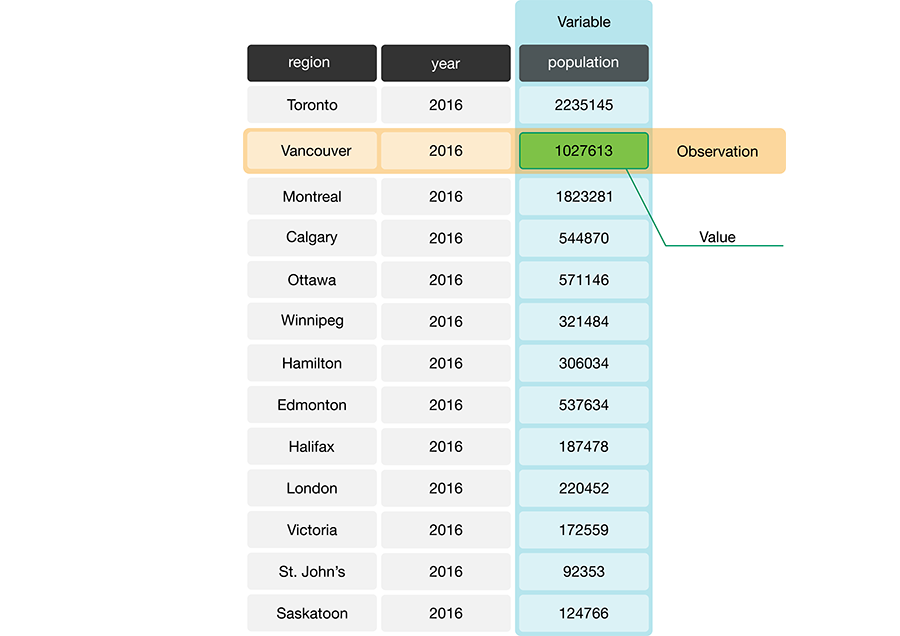
图 3.1 存储加拿大各地区人口数据的数据框。在这个示例数据框中，与 Vancouver 市这条观测对应的行用黄色标出，与 population 变量对应的列用蓝色标出。#
3.3.2. 什么是 Series？#
在 Python 中，pandas 的 Series 是像列表一样可以包含一个或多个元素的对象。它只有一列，是有序的，可以被索引，并且可以存放任意数据类型。pandas 包用 Series 对象来表示数据框中的各列。Series 里可以混放多种数据类型，但良好的做法是让一个 Series 只包含一种类型，因为同一个变量的所有观测都应该是同一类型。Python 有若干种不同的基本数据类型，如表 3.1 所示。你可以用
pd.Series() 函数创建 pandas 的 Series。例如，要创建图 3.2 中所示的 Series region，可以这样写。
import pandas as pd
region = pd.Series(["Toronto", "Montreal", "Vancouver", "Calgary", "Ottawa"])
region
0 Toronto
1 Montreal
2 Vancouver
3 Calgary
4 Ottawa
dtype: object
图 3.2 类型为字符串的 pandas Series 示例。#
数据类型 |
缩写 |
说明 |
示例 |
|---|---|---|---|
整数 |
|
正整数、负整数或零 |
|
浮点数 |
|
十进制形式表示的实数 |
|
布尔值 |
|
真或假 |
|
字符串 |
|
文本 |
|
空值 |
|
表示没有取值 |
|
在 Python 中，务必用正确的类型来表示数据。本书用到的许多
pandas 函数对不同的数据类型有不同的处理方式。你应该用 int 和 float 类型表示数值，并用它们做算术运算。int 类型用于没有小数点的整数，而 float 类型用于带小数点的数。bool 类型表示布尔变量，只能取两个值之一：True 或 False。str 类型用来表示应当被看作“文本”的数据，例如单词、名称、路径和 URL 等等。NoneType 是 Python 中的一种特殊类型，用来表示没有取值；例如，数据缺失时就可能出现这种情况。Python 还有其他基本数据类型，但本书一般不会用到。
3.3.3. 这与数据框有什么关系？#
数据框其实就是若干 Series 拼在一起形成的集合，其中每个 Series 对应一列，而且所有 Series 的长度必须相同。不过，数据框中的列不必都是同一类型。图 3.3 展示了一个数据框，其中各列是不同类型的 Series。但同一列内部的每个元素通常应该是同一类型，因为同一个变量的取值通常都是同一类型。例如，如果变量是城市名称，这个名称应该是字符串；如果变量是年份，那它应该是整数。所以，尽管 Series 允许你放不同类型的数据，最常见的做法（也是良好实践！）仍是每列只用一种类型。
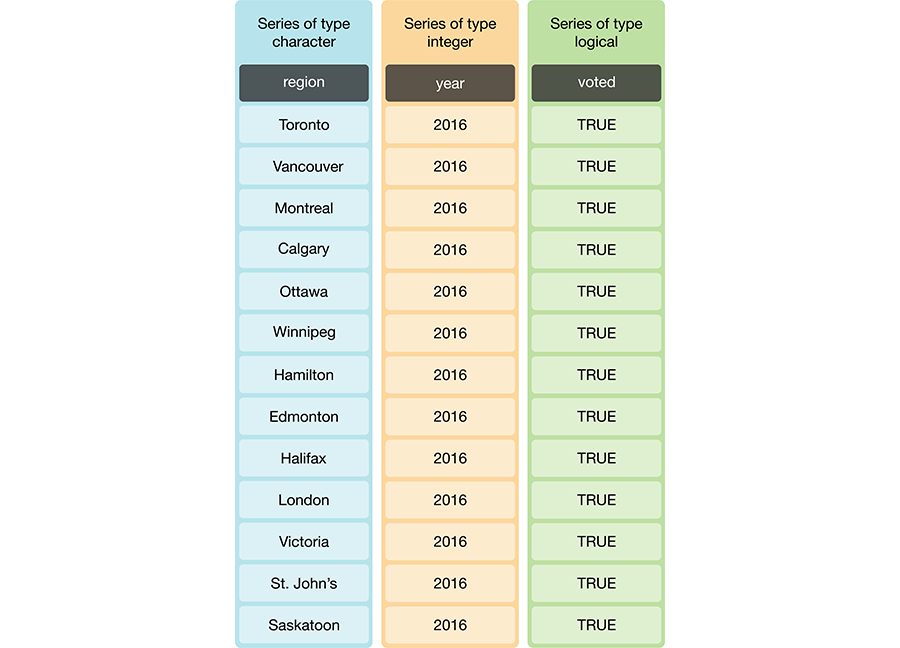
图 3.3 数据框与 Series 的类型。#
备注
你可以对数据对象使用 type 函数。例如，我们可以检查前几章用过的那份加拿大语言数据集
can_lang 属于哪个类，可以看到它是 pandas.core.frame.DataFrame。
can_lang = pd.read_csv("data/can_lang.csv")
type(can_lang)
pandas.core.frame.DataFrame
3.3.4. Python 中的数据结构#
Series 和 DataFrame 是 Python 中的数据结构，它们对大多数数据分析来说都是核心概念。我们用到的 pandas 函数往往根据具体操作返回 DataFrame
或 Series。由于
Series 本质上就是简单的 DataFrames，本书正文里会把
DataFrames 和 Series 都称作“数据框”（译注：严格来说，Series 只有单列，数据框可以有多列；原文此处把两者都笼统称作“数据框”，只是为了口语上的简便）。Python 中还有其他表示数据结构的类型。最常见的几种汇总在表 3.2 中。
数据结构 |
说明 |
|---|---|
list |
一种有序的取值集合，可以同时存放多种数据类型。 |
dict |
一种带标签的数据结构，其中 |
Series |
一种带标签的有序取值集合，可以同时存放多种数据类型。 |
DataFrame |
一种带标签的数据结构，其 |
list（列表）是一种有序的取值集合。创建列表时，把列表的内容放在方括号 [] 之间，各项之间用逗号隔开。list 可以包含不同类型的取值。下面的例子包含六个 str 条目。
cities = ["Toronto", "Vancouver", "Montreal", "Calgary", "Ottawa", "Winnipeg"]
cities
['Toronto', 'Vancouver', 'Montreal', 'Calgary', 'Ottawa', 'Winnipeg']
列表可以直接转换成 pandas 的 Series。
cities_series = pd.Series(cities)
cities_series
0 Toronto
1 Vancouver
2 Montreal
3 Calgary
4 Ottawa
5 Winnipeg
dtype: object
dict，也就是字典（dictionary），包含成对的“键”和“取值”。你用键来查找与之对应的取值。字典用花括号 {} 创建。每个条目左边是键，接着是一个冒号 :，然后是取值。一个字典可以包含多组键值对（key–value pair），各组之间用逗号隔开。键可以是很多种类型（常用的是 int 和 str），取值可以是任意类型；同一个字典里各组键值对的类型也都可以不同。下面的例子创建了一个有两个键的字典："cities" 和 "population"。与每个键对应的取值都是列表。
population_in_2016 = {
"cities": ["Toronto", "Vancouver", "Montreal", "Calgary", "Ottawa", "Winnipeg"],
"population": [2235145, 1027613, 1823281, 544870, 571146, 321484]
}
population_in_2016
{'cities': ['Toronto',
'Vancouver',
'Montreal',
'Calgary',
'Ottawa',
'Winnipeg'],
'population': [2235145, 1027613, 1823281, 544870, 571146, 321484]}
字典可以转换成数据框。键会成为列名，取值会成为相应列中的条目。字典本身是很简单的对象；最好改用数据框，因为这样才能用上 pandas 内置的功能（例如 loc[]、[]，以及后面几节会讲到的许多函数）！
population_in_2016_df = pd.DataFrame(population_in_2016)
population_in_2016_df
| cities | population | |
|---|---|---|
| 0 | Toronto | 2235145 |
| 1 | Vancouver | 1027613 |
| 2 | Montreal | 1823281 |
| 3 | Calgary | 544870 |
| 4 | Ottawa | 571146 |
| 5 | Winnipeg | 321484 |
当然，不必先单独给字典命名再传给
pd.DataFrame；我们也可以直接在调用中构造字典。这往往是创建新数据框最方便的方式。
population_in_2016_df = pd.DataFrame({
"cities": ["Toronto", "Vancouver", "Montreal", "Calgary", "Ottawa", "Winnipeg"],
"population": [2235145, 1027613, 1823281, 544870, 571146, 321484]
})
population_in_2016_df
| cities | population | |
|---|---|---|
| 0 | Toronto | 2235145 |
| 1 | Vancouver | 1027613 |
| 2 | Montreal | 1823281 |
| 3 | Calgary | 544870 |
| 4 | Ottawa | 571146 |
| 5 | Winnipeg | 321484 |
3.4. 整洁数据#
表格型数据集可以有多种组织方式。我们前面看过的数据框采用的都是整洁数据这种组织格式。本章将重点介绍整洁数据格式，以及如何把原始（而且很可能混乱）的数据整理整洁。整洁数据框满足以下三条标准 [Wickham, 2014]：
每一行是一条观测，
每一列是一个变量，
每个取值只占一个单元格（也就是说，它在数据框中的条目不与别的取值共用）。
图 3.4 展示了一份满足这三条标准的整洁数据集。
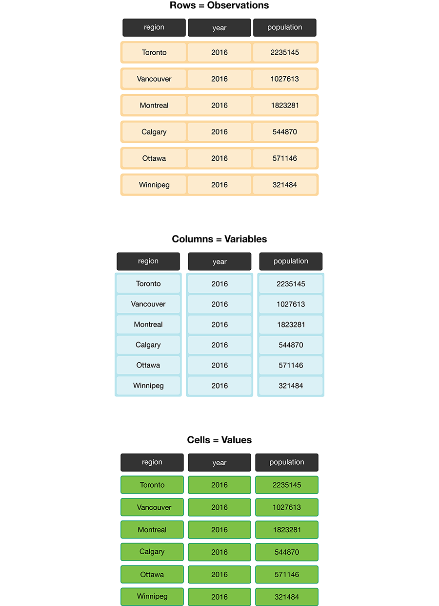
图 3.4 整洁数据满足三条标准。#
在分析的第一步就确保数据整洁，有很多充分的理由。最重要的理由是：整洁数据是一种统一、一致的格式，pandas 中几乎每个函数都能识别它。无论数据中的变量和观测代表什么，只要数据框是整洁的，你就可以用同一套工具去操作它、绘制图形并分析它。如果数据不整洁，你在分析中就必须写专门的定制代码，这类代码很容易出错，别人也很难看懂。除了让分析更容易被别人理解、更不容易出错之外，整洁数据通常也便于人解读。既然有这些好处，事先花时间把数据整理成整洁格式就很值得。好在 pandas 提供了许多设计良好的数据清洗与整理工具，能帮你轻松地把数据整理整洁。下面我们就来看看它们！
备注
对一份给定的数据集来说，整洁数据只有一种形状吗？不一定！这取决于你提的统计问题，以及该问题涉及哪些变量。对整洁数据而言，每个变量都应该单独占一列。因此，正如必须让统计问题与合适的数据分析工具相匹配一样，你也必须让统计问题与合适的变量相匹配，并确保这些变量各自表示为单独的列，从而使数据整洁。
3.4.1. 整理数据：用 melt 从宽格式变成长格式#
要让数据变成整洁格式，一项常见的操作是把分别存在不同列里、但实际上属于同一个变量的取值合并到一列。数据常常以这种方式存储，因为这种格式有时更直观，便于人阅读和理解，而数据集正是由人创建的。在图 3.5 中，左边的表格采用不整洁的“宽”格式（wide format），因为年份取值（2006、2011、2016）被存成了列名。随之而来的后果是，各个城市在这些年份的人口取值也被拆到了好几列里。
对人来说，这张表很容易读，所以你经常会看到数据以这种宽格式存储。不过，要用 Python 做数据可视化或统计分析时，这种格式就很难处理。例如，我们想找出最新的年份，就会很棘手，因为年份取值被存成了列名，而不是某一列里的取值。所以，在用函数找出最新年份（例如用 max）之前，我们必须先把列名提取出来组成一个列表，再用函数从中找出最新的年份。如果你想找出某个地区在最新年份的人口取值，问题只会更麻烦。数据整理整洁之后，这两项任务都会大大简化。
这种格式的另一个问题是，我们并不知道每个年份下面那些数字究竟代表什么。这些数字代表人口规模吗？还是土地面积？并不清楚。要同时解决这两个问题，我们可以创建名为“year”的列和名为“population”的列，把这份数据集重塑成整洁数据格式。这一变换让数据变得更“长”，即成为长格式（long format）；结果就是图 3.5 中右边的表格。注意，经过这次变换，数据框中的条目数可能会变。“不整洁”的数据有 5 行 3 列，共 15 个条目；而右边“整洁”的数据有 15 行 2 列，共 30 个条目。
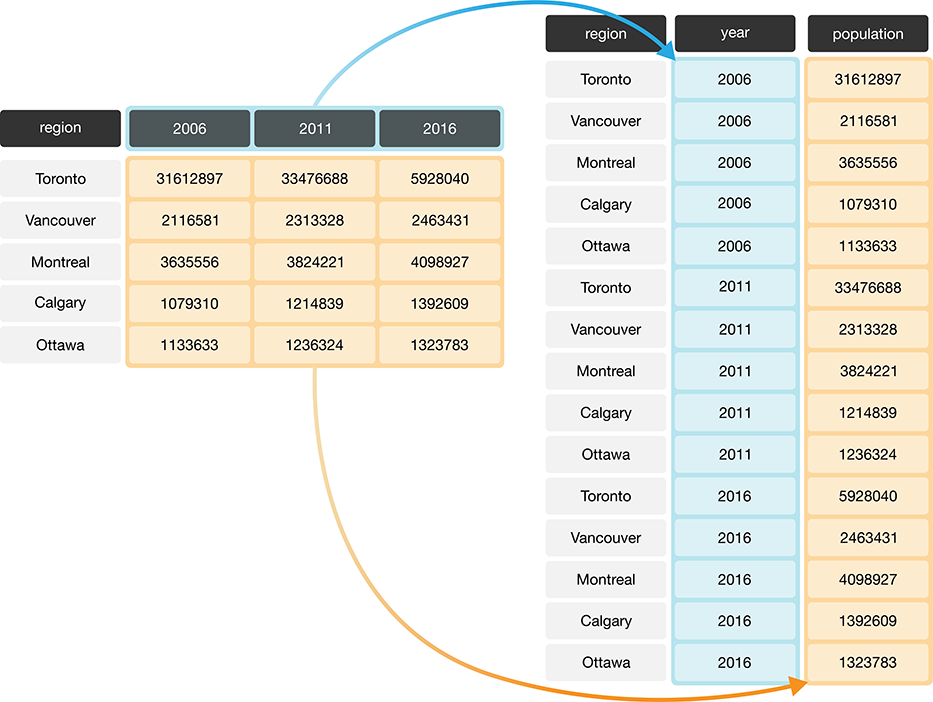
图 3.5 用 melt 把数据从宽格式转为长格式。#
在 Python 中，我们可以用 pandas 包里的 melt 函数实现这一效果。melt 函数会把多列合并起来，通常在整理数据、需要让数据框变长变窄时使用。为了学会使用 melt，我们来看一个使用
region_lang_top5_cities_wide.csv 数据集的例子。这份数据集给出
2016 年加拿大人口普查中，Toronto（多伦多）、Montréal（蒙特利尔）、Vancouver（温哥华）、Calgary（卡尔加里）和 Edmonton（埃德蒙顿）五个加拿大主要城市里，有多少加拿大人把每种语言列为母语的计数。开始之前，我们先用 pd.read_csv 读入这份（不整洁的）数据。
lang_wide = pd.read_csv("data/region_lang_top5_cities_wide.csv")
lang_wide
| category | language | Toronto | Montréal | Vancouver | Calgary | Edmonton | |
|---|---|---|---|---|---|---|---|
| 0 | Aboriginal languages | Aboriginal languages, n.o.s. | 80 | 30 | 70 | 20 | 25 |
| 1 | Non-Official & Non-Aboriginal languages | Afrikaans | 985 | 90 | 1435 | 960 | 575 |
| 2 | Non-Official & Non-Aboriginal languages | Afro-Asiatic languages, n.i.e. | 360 | 240 | 45 | 45 | 65 |
| 3 | Non-Official & Non-Aboriginal languages | Akan (Twi) | 8485 | 1015 | 400 | 705 | 885 |
| 4 | Non-Official & Non-Aboriginal languages | Albanian | 13260 | 2450 | 1090 | 1365 | 770 |
| ... | ... | ... | ... | ... | ... | ... | ... |
| 209 | Non-Official & Non-Aboriginal languages | Wolof | 165 | 2440 | 30 | 120 | 130 |
| 210 | Aboriginal languages | Woods Cree | 5 | 0 | 20 | 10 | 155 |
| 211 | Non-Official & Non-Aboriginal languages | Wu (Shanghainese) | 5290 | 1025 | 4330 | 380 | 235 |
| 212 | Non-Official & Non-Aboriginal languages | Yiddish | 3355 | 8960 | 220 | 80 | 55 |
| 213 | Non-Official & Non-Aboriginal languages | Yoruba | 3380 | 210 | 190 | 1430 | 700 |
214 rows × 7 columns
上面这种不整洁格式有什么问题？图 3.6 中左边的表格以“宽”（混乱）格式表示数据。从数据分析的角度看，这种格式并不理想，因为
region 变量（Toronto、Montréal、Vancouver、Calgary 和 Edmonton）的取值被存成了列名。因此，后面要对数据集使用的那些数据分析函数，无法方便地取到这些取值。另外，母语变量的取值分散在多列中，在我们把它们合并成一列之前，就无法完成任何想要的可视化或统计任务。举例来说，假设我们想知道在全部五个地区中，被最多加拿大人作为母语报告的语言是哪些。用当前格式的数据回答这个问题会很困难。用这种格式的数据我们确实能找到答案，但如果先把数据整理整洁，回答起来会容易得多。假如母语改存成一列，如图 3.6 右边整洁数据所示，我们只需一行代码（df["mother_tongue"].max()）就能得到最大值。
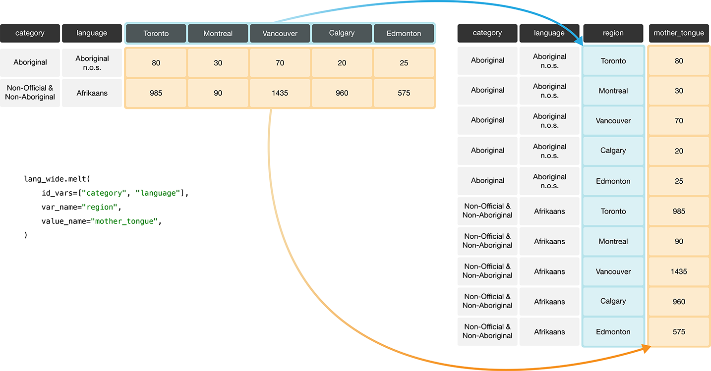
图 3.6 用 melt 函数把数据从宽格式转为长格式。#
图 3.7 详细说明了要用 melt 函数完成这一数据变换时需要指定的参数。
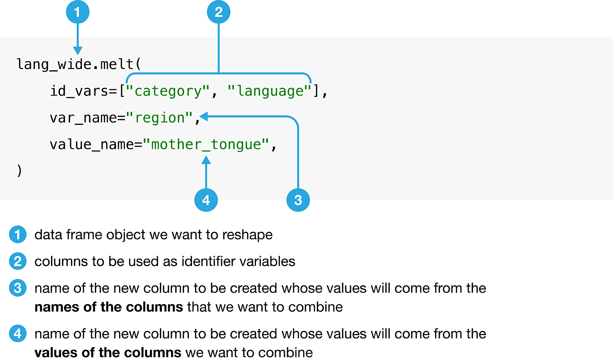
图 3.7 melt 函数的语法。#
我们用 melt 把 Toronto、Montréal、Vancouver、Calgary 和 Edmonton 这几列合并成一列，列名为 region；同时新建一列 mother_tongue，存放每个大都市区中把各语言报告为母语的加拿大人数。
lang_mother_tidy = lang_wide.melt(
id_vars=["category", "language"],
var_name="region",
value_name="mother_tongue",
)
lang_mother_tidy
| category | language | region | mother_tongue | |
|---|---|---|---|---|
| 0 | Aboriginal languages | Aboriginal languages, n.o.s. | Toronto | 80 |
| 1 | Non-Official & Non-Aboriginal languages | Afrikaans | Toronto | 985 |
| 2 | Non-Official & Non-Aboriginal languages | Afro-Asiatic languages, n.i.e. | Toronto | 360 |
| 3 | Non-Official & Non-Aboriginal languages | Akan (Twi) | Toronto | 8485 |
| 4 | Non-Official & Non-Aboriginal languages | Albanian | Toronto | 13260 |
| ... | ... | ... | ... | ... |
| 1065 | Non-Official & Non-Aboriginal languages | Wolof | Edmonton | 130 |
| 1066 | Aboriginal languages | Woods Cree | Edmonton | 155 |
| 1067 | Non-Official & Non-Aboriginal languages | Wu (Shanghainese) | Edmonton | 235 |
| 1068 | Non-Official & Non-Aboriginal languages | Yiddish | Edmonton | 55 |
| 1069 | Non-Official & Non-Aboriginal languages | Yoruba | Edmonton | 700 |
1070 rows × 4 columns
备注
在上面的代码里，对 melt 函数的调用被拆成了好几行。回忆一下，第 1 章讲过，某些情况下这是允许的。例如，像上面那样调用函数时，输入参数位于圆括号 () 之间，Python 就知道要继续读下一行。每一行都以逗号 , 结尾，读起来更方便。像这样把长行拆成多行是值得提倡的，因为它对代码可读性帮助很大。一般来说，每行代码最好控制在 80 个字符左右。
上面的数据现在已经是整洁数据了，因为整洁数据的三条标准都已满足：
所有变量（
category、language、region和mother_tongue）现在都各自成为数据框中的一列。每条观测，即每个
category、language、region的组合以及把该语言作为母语的加拿大人数，都位于同一行。每个取值只占一个单元格，即它在数据框中的行、列位置不与其他取值共用。
3.4.2. 整理数据：用 pivot 从长格式变为宽格式#
假设我们的观测分散在多行，而不是集中在同一行。例如，在图 3.8 中，左侧的表格就是不整洁的长格式，因为 count 列里混有三个变量（population、commuter 和 incorporated 计数），而且每条观测的信息（这里是某个地区的 population、commuter 与 incorporated 计数）被拆到了三行。请记住：整洁数据的一条标准就是每条观测必须位于同一行。
使用这种格式的数据——两个或多个变量混在同一列里——会让许多常用的 pandas 函数难以使用。例如，要找出通勤人数的最大值，就需要额外做一步筛选，先把通勤人数的取值挑出来，然后才能计算最大值。相比之下，如果数据是整洁的，我们只要计算通勤人数那一列的最大值即可。要把这份不整洁的数据集整理成整洁（在这个例子里也是更宽）的格式，我们需要创建名为“population”、“commuters”和“incorporated”的列。图 3.8 的右侧表格展示了这一过程。
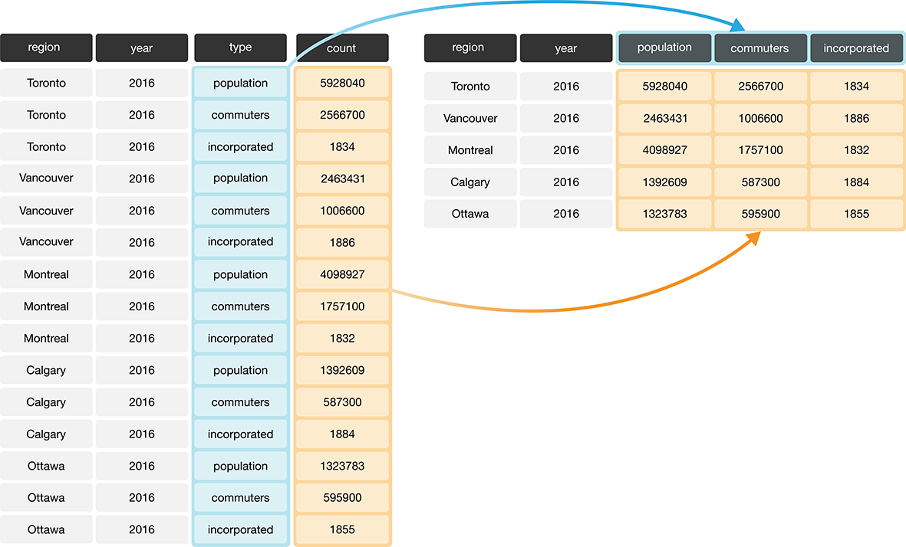
图 3.8 从长格式变为宽格式。#
在 Python 里整理这类数据，可以用 pivot 函数。pivot 函数通常会增加数据集的列数（把数据变宽），同时减少行数。为了学会使用 pivot，我们用一个例子来演示，用的是 region_lang_top5_cities_long.csv 数据集。这份数据集记录的是五个大城市（Toronto、Montréal、Vancouver、Calgary 和 Edmonton）中有多少加拿大人把某种语言作为在家和工作中主要使用的语言。
lang_long = pd.read_csv("data/region_lang_top5_cities_long.csv")
lang_long
| region | category | language | type | count | |
|---|---|---|---|---|---|
| 0 | Montréal | Aboriginal languages | Aboriginal languages, n.o.s. | most_at_home | 15 |
| 1 | Montréal | Aboriginal languages | Aboriginal languages, n.o.s. | most_at_work | 0 |
| 2 | Toronto | Aboriginal languages | Aboriginal languages, n.o.s. | most_at_home | 50 |
| 3 | Toronto | Aboriginal languages | Aboriginal languages, n.o.s. | most_at_work | 0 |
| 4 | Calgary | Aboriginal languages | Aboriginal languages, n.o.s. | most_at_home | 5 |
| ... | ... | ... | ... | ... | ... |
| 2135 | Calgary | Non-Official & Non-Aboriginal languages | Yoruba | most_at_work | 0 |
| 2136 | Edmonton | Non-Official & Non-Aboriginal languages | Yoruba | most_at_home | 280 |
| 2137 | Edmonton | Non-Official & Non-Aboriginal languages | Yoruba | most_at_work | 0 |
| 2138 | Vancouver | Non-Official & Non-Aboriginal languages | Yoruba | most_at_home | 40 |
| 2139 | Vancouver | Non-Official & Non-Aboriginal languages | Yoruba | most_at_work | 0 |
2140 rows × 5 columns
上面这份数据集为什么不整洁呢？在这个例子里，每条观测是某个地区中的一种语言。可是每条观测都被拆到了多行：一行记录 most_at_home 的计数，另一行记录 most_at_work 的计数。假设这份数据的目标是可视化在家主要使用该语言的人数与在工作中主要使用该语言的人数之间的关系。以数据当前的形式，这件事很难做到，因为这两个变量存放在同一列里。图 3.9 展示了如何用 pivot 函数整理这份数据。
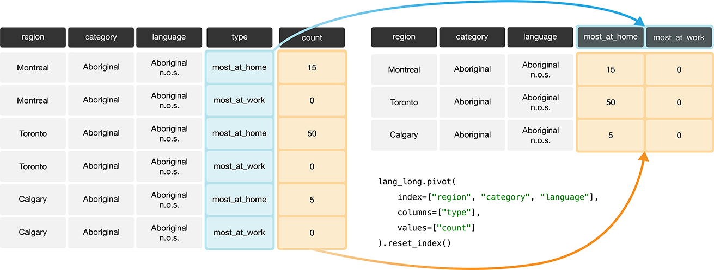
图 3.9 用 pivot 函数把长格式变为宽格式。#
图 3.10 详细说明了使用 pivot 函数时需要指定的参数。
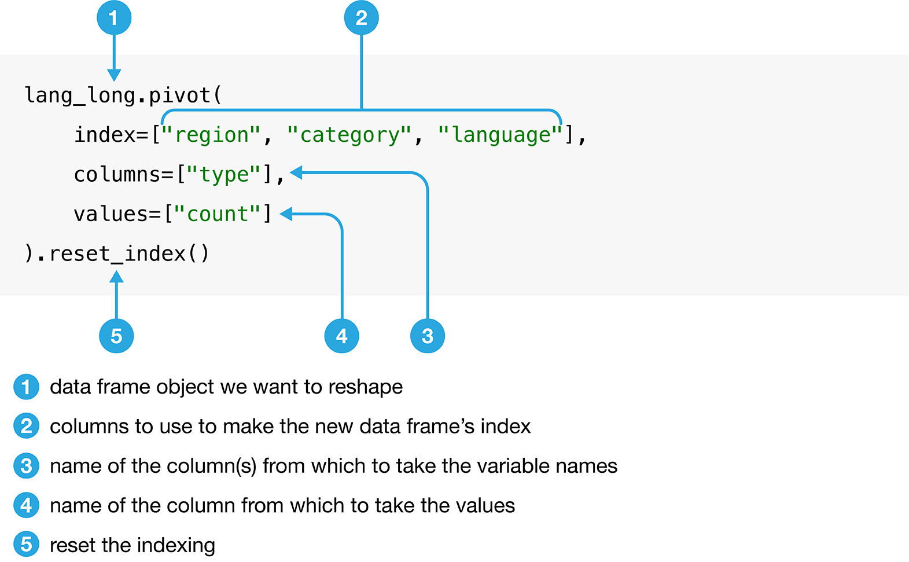
图 3.10 pivot 函数的语法。#
我们将按照图 3.10 里的说明调用该函数，然后再给列重命名。
lang_home_tidy = lang_long.pivot(
index=["region", "category", "language"],
columns=["type"],
values=["count"]
).reset_index()
lang_home_tidy.columns = [
"region",
"category",
"language",
"most_at_home",
"most_at_work",
]
lang_home_tidy
| region | category | language | most_at_home | most_at_work | |
|---|---|---|---|---|---|
| 0 | Calgary | Aboriginal languages | Aboriginal languages, n.o.s. | 5 | 0 |
| 1 | Calgary | Aboriginal languages | Algonquian languages, n.i.e. | 0 | 0 |
| 2 | Calgary | Aboriginal languages | Algonquin | 0 | 0 |
| 3 | Calgary | Aboriginal languages | Athabaskan languages, n.i.e. | 0 | 0 |
| 4 | Calgary | Aboriginal languages | Atikamekw | 0 | 0 |
| ... | ... | ... | ... | ... | ... |
| 1065 | Vancouver | Non-Official & Non-Aboriginal languages | Wu (Shanghainese) | 2495 | 45 |
| 1066 | Vancouver | Non-Official & Non-Aboriginal languages | Yiddish | 10 | 0 |
| 1067 | Vancouver | Non-Official & Non-Aboriginal languages | Yoruba | 40 | 0 |
| 1068 | Vancouver | Official languages | English | 1622735 | 1330555 |
| 1069 | Vancouver | Official languages | French | 8630 | 3245 |
1070 rows × 5 columns
第一步中请注意，我们加了一次 reset_index 调用。当传给 pivot 的 index 是多个列名时，这几列的取值会成为行索引（MultiIndex），也就是每一行的“名字”；用 [] 或 loc 筛选行时依据的就是这些名字，而不是简单的数字。这可能让人困惑……reset_index 的作用是回到我们熟悉的常规行为：每一行用整数“命名”。这一点比较微妙，但要点是：调用 pivot 之后，最好接着调用 reset_index。
第二步操作是给列重命名。执行 pivot 操作时，它会保留原来的列名 "count"，并把 "type" 作为第二个列名加上去。一列有两个名字，很容易让人困惑！所以我们重新命名，让每列只有一个名字。
我们可以用 info 函数打印出数据框的一些有用信息。第一行告诉了我们 lang_home_tidy 的 type（它是一个 pandas 的 DataFrame）。第二行告诉我们数据有多少行：1070 行，并且可以用 0 到 1069 之间的数字为这些行建立索引（记住，Python 从 0 开始计数！）。接着是关于各列的打印输出。这里总共有 5 列。它打印出的那张小表格会告诉你每一列的名字、非空取值的个数（也就是不是缺失值的条目数），以及这些取值的类型。最后两行汇总了每一列的类型，以及数据框在你的计算机上占用的内存大小。
lang_home_tidy.info()
<class 'pandas.core.frame.DataFrame'>
RangeIndex: 1070 entries, 0 to 1069
Data columns (total 5 columns):
# Column Non-Null Count Dtype
--- ------ -------------- -----
0 region 1070 non-null object
1 category 1070 non-null object
2 language 1070 non-null object
3 most_at_home 1070 non-null int64
4 most_at_work 1070 non-null int64
dtypes: int64(2), object(3)
memory usage: 41.9+ KB
现在数据是整洁的了！我们可以再按三条标准检查一遍，确认这份数据是整洁数据集。
所有统计变量都各自成为数据框中的一列（即
most_at_home和most_at_work已经分到数据框中各自的列里）。每条观测（即某个地区里的一种语言）都位于同一行。
每个取值只占一个单元格（即它在数据框中的行、列位置不与其他取值共用）。
你可能注意到，整洁数据集中的列数与混乱数据集中的列数相同。所以 pivot 其实并没有把数据“变宽”。原因只是原来的 type 列里只有两个类别。如果它有两个以上类别，pivot 就会创建更多列，我们也能看到数据集“变宽”了。
3.4.3. 整理数据：用 str.split 处理多个分隔符#
同一个单元格里存放多个取值时，数据同样不算整洁。下面展示的数据集比上面处理过的那些还要混乱：Toronto、Montréal、Vancouver、Calgary 和 Edmonton 这几列中，加拿大人把某种语言作为在家和工作中主要使用语言的人数被放在同一列里，中间用分隔符（separator，也就是 /）隔开。列名本身就是某个变量的取值，而且每个取值并没有自己独立的单元格！要把这份混乱数据变成整洁数据，我们必须解决这些问题。
lang_messy = pd.read_csv("data/region_lang_top5_cities_messy.csv")
lang_messy
| category | language | Toronto | Montréal | Vancouver | Calgary | Edmonton | |
|---|---|---|---|---|---|---|---|
| 0 | Aboriginal languages | Aboriginal languages, n.o.s. | 50/0 | 15/0 | 15/0 | 5/0 | 10/0 |
| 1 | Non-Official & Non-Aboriginal languages | Afrikaans | 265/0 | 10/0 | 520/10 | 505/15 | 300/0 |
| 2 | Non-Official & Non-Aboriginal languages | Afro-Asiatic languages, n.i.e. | 185/10 | 65/0 | 10/0 | 15/0 | 20/0 |
| 3 | Non-Official & Non-Aboriginal languages | Akan (Twi) | 4045/20 | 440/0 | 125/10 | 330/0 | 445/0 |
| 4 | Non-Official & Non-Aboriginal languages | Albanian | 6380/215 | 1445/20 | 530/10 | 620/25 | 370/10 |
| ... | ... | ... | ... | ... | ... | ... | ... |
| 209 | Non-Official & Non-Aboriginal languages | Wolof | 75/0 | 770/0 | 5/0 | 65/0 | 90/10 |
| 210 | Aboriginal languages | Woods Cree | 0/10 | 0/0 | 5/0 | 0/0 | 20/0 |
| 211 | Non-Official & Non-Aboriginal languages | Wu (Shanghainese) | 3130/30 | 760/15 | 2495/45 | 210/0 | 120/0 |
| 212 | Non-Official & Non-Aboriginal languages | Yiddish | 350/20 | 6665/860 | 10/0 | 10/0 | 0/0 |
| 213 | Non-Official & Non-Aboriginal languages | Yoruba | 1080/10 | 45/0 | 40/0 | 350/0 | 280/0 |
214 rows × 7 columns
首先，我们像前面那样用 melt 创建两列：region 和 value。新的 region 列将存放地区名称，新的 value 列暂时存放还需要进一步拆分的数据，也就是把某种语言作为在家和工作中主要使用语言的加拿大人数。
lang_messy_longer = lang_messy.melt(
id_vars=["category", "language"],
var_name="region",
value_name="value",
)
lang_messy_longer
| category | language | region | value | |
|---|---|---|---|---|
| 0 | Aboriginal languages | Aboriginal languages, n.o.s. | Toronto | 50/0 |
| 1 | Non-Official & Non-Aboriginal languages | Afrikaans | Toronto | 265/0 |
| 2 | Non-Official & Non-Aboriginal languages | Afro-Asiatic languages, n.i.e. | Toronto | 185/10 |
| 3 | Non-Official & Non-Aboriginal languages | Akan (Twi) | Toronto | 4045/20 |
| 4 | Non-Official & Non-Aboriginal languages | Albanian | Toronto | 6380/215 |
| ... | ... | ... | ... | ... |
| 1065 | Non-Official & Non-Aboriginal languages | Wolof | Edmonton | 90/10 |
| 1066 | Aboriginal languages | Woods Cree | Edmonton | 20/0 |
| 1067 | Non-Official & Non-Aboriginal languages | Wu (Shanghainese) | Edmonton | 120/0 |
| 1068 | Non-Official & Non-Aboriginal languages | Yiddish | Edmonton | 0/0 |
| 1069 | Non-Official & Non-Aboriginal languages | Yoruba | Edmonton | 280/0 |
1070 rows × 4 columns
接下来，我们把 value 列拆成两列。在基本 Python 里，如果要把字符串 "50/0" 拆成两个数 ["50", "0"]，我们会用字符串的 split 方法，并指明按斜杠字符 "/" 拆分。
"50/0".split("/")
['50', '0']
pandas 包提供了类似的函数，可以通过 str 方法访问。所以，要拆分数据框中整列的所有条目，我们会用 str.split 方法。该方法的输出是一个数据框，其中包含两列：一列只有每个地区中在家里最常使用该语言的加拿大人数，另一列只有在工作中最常使用该语言的加拿大人数。我们把不再需要的 value 列从 lang_messy_longer 数据框中删掉，然后把 str.split 得到的两列赋给两个新列。图 3.11
列出了使用 str.split 需要指定的内容。
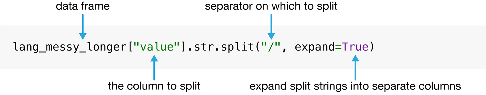
图 3.11 str.split 函数的语法。#
tidy_lang = lang_messy_longer.drop(columns=["value"])
tidy_lang[["most_at_home", "most_at_work"]] = lang_messy_longer["value"].str.split("/", expand=True)
tidy_lang
| category | language | region | most_at_home | most_at_work | |
|---|---|---|---|---|---|
| 0 | Aboriginal languages | Aboriginal languages, n.o.s. | Toronto | 50 | 0 |
| 1 | Non-Official & Non-Aboriginal languages | Afrikaans | Toronto | 265 | 0 |
| 2 | Non-Official & Non-Aboriginal languages | Afro-Asiatic languages, n.i.e. | Toronto | 185 | 10 |
| 3 | Non-Official & Non-Aboriginal languages | Akan (Twi) | Toronto | 4045 | 20 |
| 4 | Non-Official & Non-Aboriginal languages | Albanian | Toronto | 6380 | 215 |
| ... | ... | ... | ... | ... | ... |
| 1065 | Non-Official & Non-Aboriginal languages | Wolof | Edmonton | 90 | 10 |
| 1066 | Aboriginal languages | Woods Cree | Edmonton | 20 | 0 |
| 1067 | Non-Official & Non-Aboriginal languages | Wu (Shanghainese) | Edmonton | 120 | 0 |
| 1068 | Non-Official & Non-Aboriginal languages | Yiddish | Edmonton | 0 | 0 |
| 1069 | Non-Official & Non-Aboriginal languages | Yoruba | Edmonton | 280 | 0 |
1070 rows × 5 columns
这份数据集现在整洁了吗？回忆一下整洁数据的三条标准：
每一行是一条观测，
每一列是一个变量，
每个取值只占一个单元格。
可以看到，这份数据现在满足全部三条标准，分析起来更容易了。不过我们还没做完！虽然从上面的数据框里看不出来，但所有变量实际上都是 object 数据类型。可以用 info 方法检查一下。
tidy_lang.info()
<class 'pandas.core.frame.DataFrame'>
RangeIndex: 1070 entries, 0 to 1069
Data columns (total 5 columns):
# Column Non-Null Count Dtype
--- ------ -------------- -----
0 category 1070 non-null object
1 language 1070 non-null object
2 region 1070 non-null object
3 most_at_home 1070 non-null object
4 most_at_work 1070 non-null object
dtypes: object(5)
memory usage: 41.9+ KB
pandas 数据框中的 object 列，要么是字符串列，要么是混合类型的列。在前面第 3.4.2 节那个例子里，most_at_home 和 most_at_work 两个变量是 int64（整数），属于数值型数据。类型发生变化，是因为读取这份混乱数据集时出现了分隔符（/）。Python 把这些列读成了字符串类型，而 str.split 默认返回 object 数据类型的列。
region、category 和 language 存放的是类别取值，把它们存成 object 类型是合理的。不过，假设我们想用一些把 most_at_home 和 most_at_work 列当作数字处理的函数（例如找出某列中高于某个数值阈值的行），如果变量存成 object，这些函数就用不了。好在 pandas 的 astype 方法能很自然地解决这类问题：它会把列转换成指定的数据类型。这里我们选择 int 数据类型，表示这些变量存放的是整数计数。注意，下面我们会把新的数值 Series 赋值给 tidy_lang 中的 most_at_home 和 most_at_work 列；这种语法我们之前在第 1.9 节中见过，本章后面在第 3.11 节中还会更深入地讨论。
tidy_lang["most_at_home"] = tidy_lang["most_at_home"].astype("int")
tidy_lang["most_at_work"] = tidy_lang["most_at_work"].astype("int")
tidy_lang
| category | language | region | most_at_home | most_at_work | |
|---|---|---|---|---|---|
| 0 | Aboriginal languages | Aboriginal languages, n.o.s. | Toronto | 50 | 0 |
| 1 | Non-Official & Non-Aboriginal languages | Afrikaans | Toronto | 265 | 0 |
| 2 | Non-Official & Non-Aboriginal languages | Afro-Asiatic languages, n.i.e. | Toronto | 185 | 10 |
| 3 | Non-Official & Non-Aboriginal languages | Akan (Twi) | Toronto | 4045 | 20 |
| 4 | Non-Official & Non-Aboriginal languages | Albanian | Toronto | 6380 | 215 |
| ... | ... | ... | ... | ... | ... |
| 1065 | Non-Official & Non-Aboriginal languages | Wolof | Edmonton | 90 | 10 |
| 1066 | Aboriginal languages | Woods Cree | Edmonton | 20 | 0 |
| 1067 | Non-Official & Non-Aboriginal languages | Wu (Shanghainese) | Edmonton | 120 | 0 |
| 1068 | Non-Official & Non-Aboriginal languages | Yiddish | Edmonton | 0 | 0 |
| 1069 | Non-Official & Non-Aboriginal languages | Yoruba | Edmonton | 280 | 0 |
1070 rows × 5 columns
tidy_lang.info()
<class 'pandas.core.frame.DataFrame'>
RangeIndex: 1070 entries, 0 to 1069
Data columns (total 5 columns):
# Column Non-Null Count Dtype
--- ------ -------------- -----
0 category 1070 non-null object
1 language 1070 non-null object
2 region 1070 non-null object
3 most_at_home 1070 non-null int32
4 most_at_work 1070 non-null int32
dtypes: int32(2), object(3)
memory usage: 33.6+ KB
现在我们看到 most_at_home 和 most_at_work 列都是 int64 数据类型，说明它们是整数类型（也就是数字）！
3.5. 用 [] 提取行或列#
既然 tidy_lang 数据确实整洁了，我们就可以开始用 pandas 那一整套强大的函数来操作它。我们先回顾一下第 1 章里的 []，它可以取出数据框中行或列的子集。本节将重点介绍 [] 更高级的用法，并深入讲解在 [] 中筛选行子集时可以使用的各种逻辑表达式（logical statement）。
3.5.1. 按列名提取列#
回忆一下，如果传入一个列名列表，[] 就会返回由这些列名构成的列子集，形式是数据框。假设我们想从 tidy_lang 数据集中选取 language、region、most_at_home 和 most_at_work 这几列，就可以用在第 1 章中学到的方法，把这些列名全部传进方括号。
tidy_lang[["language", "region", "most_at_home", "most_at_work"]]
| language | region | most_at_home | most_at_work | |
|---|---|---|---|---|
| 0 | Aboriginal languages, n.o.s. | Toronto | 50 | 0 |
| 1 | Afrikaans | Toronto | 265 | 0 |
| 2 | Afro-Asiatic languages, n.i.e. | Toronto | 185 | 10 |
| 3 | Akan (Twi) | Toronto | 4045 | 20 |
| 4 | Albanian | Toronto | 6380 | 215 |
| ... | ... | ... | ... | ... |
| 1065 | Wolof | Edmonton | 90 | 10 |
| 1066 | Woods Cree | Edmonton | 20 | 0 |
| 1067 | Wu (Shanghainese) | Edmonton | 120 | 0 |
| 1068 | Yiddish | Edmonton | 0 | 0 |
| 1069 | Yoruba | Edmonton | 280 | 0 |
1070 rows × 4 columns
同样，如果传入的列表只包含一个列名，返回的就是只含这一列的数据框。
tidy_lang[["language"]]
| language | |
|---|---|
| 0 | Aboriginal languages, n.o.s. |
| 1 | Afrikaans |
| 2 | Afro-Asiatic languages, n.i.e. |
| 3 | Akan (Twi) |
| 4 | Albanian |
| ... | ... |
| 1065 | Wolof |
| 1066 | Woods Cree |
| 1067 | Wu (Shanghainese) |
| 1068 | Yiddish |
| 1069 | Yoruba |
1070 rows × 1 columns
如果需要提取的只有单独一列，我们也可以传入列名字符串，而不传列表。这时返回的数据类型是 Series。在本书中，我们大多这样提取单独的列，不过也会指出少数几处，说明把单独的列作为数据框提取出来更有优势。
tidy_lang["language"]
0 Aboriginal languages, n.o.s.
1 Afrikaans
2 Afro-Asiatic languages, n.i.e.
3 Akan (Twi)
4 Albanian
...
1065 Wolof
1066 Woods Cree
1067 Wu (Shanghainese)
1068 Yiddish
1069 Yoruba
Name: language, Length: 1070, dtype: object
3.5.2. 用 == 提取具有特定取值的行#
假设我们只关心 tidy_lang 中与加拿大官方语言（英语和法语）对应的那部分行。我们可以用相等运算符（equivalency operator，即 ==）把 category 列的取值与 "Official languages" 做比较，从而取出这些行。传入这些参数后，[] 返回的数据框包含输入数据框的所有列，但只保留逻辑表达式中指定的那些行，也就是 category 列取值为 "Official languages" 的行。我们把这个数据框命名为 official_langs。
official_langs = tidy_lang[tidy_lang["category"] == "Official languages"]
official_langs
| category | language | region | most_at_home | most_at_work | |
|---|---|---|---|---|---|
| 54 | Official languages | English | Toronto | 3836770 | 3218725 |
| 59 | Official languages | French | Toronto | 29800 | 11940 |
| 268 | Official languages | English | Montréal | 620510 | 412120 |
| 273 | Official languages | French | Montréal | 2669195 | 1607550 |
| 482 | Official languages | English | Vancouver | 1622735 | 1330555 |
| 487 | Official languages | French | Vancouver | 8630 | 3245 |
| 696 | Official languages | English | Calgary | 1065070 | 844740 |
| 701 | Official languages | French | Calgary | 8630 | 2140 |
| 910 | Official languages | English | Edmonton | 1050410 | 792700 |
| 915 | Official languages | French | Edmonton | 10950 | 2520 |
3.5.3. 用 != 提取不具有特定取值的行#
如果我们想要数据集中除 "Official languages" 类别之外的所有其他语言类别呢？这可以用不等运算符（inequivalency operator，即 !=）实现，它表示“不等于”。因此，若要找出 category 不等于 "Official languages" 的所有行，就写下方的代码。
tidy_lang[tidy_lang["category"] != "Official languages"]
| category | language | region | most_at_home | most_at_work | |
|---|---|---|---|---|---|
| 0 | Aboriginal languages | Aboriginal languages, n.o.s. | Toronto | 50 | 0 |
| 1 | Non-Official & Non-Aboriginal languages | Afrikaans | Toronto | 265 | 0 |
| 2 | Non-Official & Non-Aboriginal languages | Afro-Asiatic languages, n.i.e. | Toronto | 185 | 10 |
| 3 | Non-Official & Non-Aboriginal languages | Akan (Twi) | Toronto | 4045 | 20 |
| 4 | Non-Official & Non-Aboriginal languages | Albanian | Toronto | 6380 | 215 |
| ... | ... | ... | ... | ... | ... |
| 1065 | Non-Official & Non-Aboriginal languages | Wolof | Edmonton | 90 | 10 |
| 1066 | Aboriginal languages | Woods Cree | Edmonton | 20 | 0 |
| 1067 | Non-Official & Non-Aboriginal languages | Wu (Shanghainese) | Edmonton | 120 | 0 |
| 1068 | Non-Official & Non-Aboriginal languages | Yiddish | Edmonton | 0 | 0 |
| 1069 | Non-Official & Non-Aboriginal languages | Yoruba | Edmonton | 280 | 0 |
1060 rows × 5 columns
3.5.4. 用 & 提取同时满足多个条件的行#
现在假设我们只想查看 Montréal 中法语的那些行。为此需要筛选数据集，找出同时满足多个条件的行。这可以用逻辑与运算符（ampersand，即 & 符号）实现，Python 把它解释为“与”。我们按下方所示的代码对 official_langs 数据框做筛选，取出 region == "Montréal" 并且 language == "French" 的行。
tidy_lang[
(tidy_lang["region"] == "Montréal") &
(tidy_lang["language"] == "French")
]
| category | language | region | most_at_home | most_at_work | |
|---|---|---|---|---|---|
| 273 | Official languages | French | Montréal | 2669195 | 1607550 |
3.5.5. 用 | 提取至少满足一个条件的行#
假设我们只关心 official_langs 数据集中阿尔伯塔省的两个城市 Edmonton（埃德蒙顿）和 Calgary（卡尔加里）对应的行。这里不能用上面那种 &，因为 region 不可能同时是 “Edmonton” 和 “Calgary”。可以改用逻辑或运算符（vertical pipe，即 |），它给出的情形是：满足一个条件或另一个条件或两个条件都满足。在下方代码中，我们让 Python 返回 region 列等于 “Calgary” 或 “Edmonton” 的行。
official_langs[
(official_langs["region"] == "Calgary") |
(official_langs["region"] == "Edmonton")
]
| category | language | region | most_at_home | most_at_work | |
|---|---|---|---|---|---|
| 696 | Official languages | English | Calgary | 1065070 | 844740 |
| 701 | Official languages | French | Calgary | 8630 | 2140 |
| 910 | Official languages | English | Edmonton | 1050410 | 792700 |
| 915 | Official languages | French | Edmonton | 10950 | 2520 |
3.5.6. 用 isin 提取取值属于某个列表的行#
接下来，假设我们想看这五座城市的人口。我们来读取 region_data.csv 文件，它来自 2016 年加拿大人口普查，含有不同地区的家庭户数、土地面积、人口和住宅数量等统计数据。
region_data = pd.read_csv("data/region_data.csv")
region_data
| region | households | area | population | dwellings | |
|---|---|---|---|---|---|
| 0 | Belleville | 43002 | 1354.65121 | 103472 | 45050 |
| 1 | Lethbridge | 45696 | 3046.69699 | 117394 | 48317 |
| 2 | Thunder Bay | 52545 | 2618.26318 | 121621 | 57146 |
| 3 | Peterborough | 50533 | 1636.98336 | 121721 | 55662 |
| 4 | Saint John | 52872 | 3793.42158 | 126202 | 58398 |
| ... | ... | ... | ... | ... | ... |
| 30 | Ottawa - Gatineau | 535499 | 7168.96442 | 1323783 | 571146 |
| 31 | Calgary | 519693 | 5241.70103 | 1392609 | 544870 |
| 32 | Vancouver | 960894 | 3040.41532 | 2463431 | 1027613 |
| 33 | Montréal | 1727310 | 4638.24059 | 4098927 | 1823281 |
| 34 | Toronto | 2135909 | 6269.93132 | 5928040 | 2235145 |
35 rows × 5 columns
要得到这五座城市的人口，可以用 isin 方法筛选数据集。isin 方法用来判断某个元素是否属于一个列表。这里我们筛选的是 region 列的取值与我们关注的五座城市中任意一座相同的行：Toronto、Montréal、Vancouver、Calgary 和 Edmonton。
city_names = ["Toronto", "Montréal", "Vancouver", "Calgary", "Edmonton"]
five_cities = region_data[region_data["region"].isin(city_names)]
five_cities
| region | households | area | population | dwellings | |
|---|---|---|---|---|---|
| 29 | Edmonton | 502143 | 9857.77908 | 1321426 | 537634 |
| 31 | Calgary | 519693 | 5241.70103 | 1392609 | 544870 |
| 32 | Vancouver | 960894 | 3040.41532 | 2463431 | 1027613 |
| 33 | Montréal | 1727310 | 4638.24059 | 4098927 | 1823281 |
| 34 | Toronto | 2135909 | 6269.93132 | 5928040 | 2235145 |
备注
== 与 isin 有什么区别？假设有两个 Series，seriesA 和 seriesB。在 Python 里输入 seriesA == seriesB，它会逐元素地比较这两个 Series：Python 检查 seriesA 的第一个元素是否等于 seriesB 的第一个元素，seriesA 的第二个元素是否等于 seriesB 的第二个元素，依此类推。而 seriesA.isin(seriesB) 会把 seriesA 的第一个元素与 seriesB 中的所有元素比较，接着把 seriesA 的第二个元素与 seriesB 中的所有元素比较，依此类推。请注意下例中 == 与 isin 的区别。
pd.Series(["Vancouver", "Toronto"]) == pd.Series(["Toronto", "Vancouver"])
0 False
1 False
dtype: bool
pd.Series(["Vancouver", "Toronto"]).isin(pd.Series(["Toronto", "Vancouver"]))
0 True
1 True
dtype: bool
3.5.7. 用 > 和 < 提取高于或低于阈值的行#
我们在第 3.5.4 节中看到，有 2,669,195 人报告自己在 Montréal 把法语作为在家主要使用的语言。如果我们要找的是这样的地区：在那里，把某种官方语言作为在家主要使用语言的人数多于 Montréal 的法语人数，就可以用 [] 取出 most_at_home 的取值大于 2,669,195 的行。我们用 > 符号查找高于阈值的取值，用 < 符号查找低于阈值的取值；>= 和 <= 符号同样分别查找大于或等于阈值、小于或等于阈值的取值。
official_langs[official_langs["most_at_home"] > 2669195]
| category | language | region | most_at_home | most_at_work | |
|---|---|---|---|---|---|
| 54 | Official languages | English | Toronto | 3836770 | 3218725 |
这个操作返回的数据框只有一行，说明在考虑官方语言时，根据 2016 年加拿大人口普查，只有 Toronto 的英语作为在家主要使用语言的人数多于 Montréal 的法语。
3.5.8. 用 query 提取行#
你也可以用 query 方法提取高于、低于、等于或不等于某个阈值的行。例如，下面这句得到的结果与使用 official_langs[official_langs["most_at_home"] > 2669195] 时相同。
official_langs.query("most_at_home > 2669195")
| category | language | region | most_at_home | most_at_work | |
|---|---|---|---|---|---|
| 54 | Official languages | English | Toronto | 3836770 | 3218725 |
查询（也就是我们用来选取取值的条件）以字符串形式传入。query 方法没有前面介绍的几种做法常用，但在让一长串链式筛选操作读起来更轻松时，它很管用。
3.6. 用 loc[] 筛选行并选取列#
[] 操作只用于筛选行或选取列这两件事中的一件，不能同时完成两件。这正是 loc[] 的用武之地。先看第一个例子：回忆一下第 1 章中的 loc[]，我们可以用它取出 tidy_lang 数据框中行与列的子集。loc[] 的第一个参数给出一个逻辑表达式，把行筛选到只保留与 Toronto 地区有关的那些；第二个参数给出按列名保留的列列表。
tidy_lang.loc[
tidy_lang["region"] == "Toronto",
["language", "region", "most_at_home", "most_at_work"]
]
| language | region | most_at_home | most_at_work | |
|---|---|---|---|---|
| 0 | Aboriginal languages, n.o.s. | Toronto | 50 | 0 |
| 1 | Afrikaans | Toronto | 265 | 0 |
| 2 | Afro-Asiatic languages, n.i.e. | Toronto | 185 | 10 |
| 3 | Akan (Twi) | Toronto | 4045 | 20 |
| 4 | Albanian | Toronto | 6380 | 215 |
| ... | ... | ... | ... | ... |
| 209 | Wolof | Toronto | 75 | 0 |
| 210 | Woods Cree | Toronto | 0 | 10 |
| 211 | Wu (Shanghainese) | Toronto | 3130 | 30 |
| 212 | Yiddish | Toronto | 350 | 20 |
| 213 | Yoruba | Toronto | 1080 | 10 |
214 rows × 4 columns
除了能同时取行和列的子集，loc[] 还有两项 [] 不具备的特殊能力。首先，loc[] 可以指定行和列的范围。例如，列列表 language、region、most_at_home、most_at_work 对应的正是从 language 到 most_at_work 的列范围（column range）。我们可以不必像上面那样把所有列名逐一列出，而是直接写出列范围 "language":"most_at_work"；: 语法表示范围，loc[] 支持它，而 [] 不支持。
tidy_lang.loc[
tidy_lang["region"] == "Toronto",
"language":"most_at_work"
]
| language | region | most_at_home | most_at_work | |
|---|---|---|---|---|
| 0 | Aboriginal languages, n.o.s. | Toronto | 50 | 0 |
| 1 | Afrikaans | Toronto | 265 | 0 |
| 2 | Afro-Asiatic languages, n.i.e. | Toronto | 185 | 10 |
| 3 | Akan (Twi) | Toronto | 4045 | 20 |
| 4 | Albanian | Toronto | 6380 | 215 |
| ... | ... | ... | ... | ... |
| 209 | Wolof | Toronto | 75 | 0 |
| 210 | Woods Cree | Toronto | 0 | 10 |
| 211 | Wu (Shanghainese) | Toronto | 3130 | 30 |
| 212 | Yiddish | Toronto | 350 | 20 |
| 213 | Yoruba | Toronto | 1080 | 10 |
214 rows × 4 columns
我们也可以只写一个 :——前后都不写任何内容——表示要取回全部内容。例如，要取全部行、并且只保留从 language 到 most_at_work 的列，可以用下面这个表达式。
tidy_lang.loc[:, "language":"most_at_work"]
| language | region | most_at_home | most_at_work | |
|---|---|---|---|---|
| 0 | Aboriginal languages, n.o.s. | Toronto | 50 | 0 |
| 1 | Afrikaans | Toronto | 265 | 0 |
| 2 | Afro-Asiatic languages, n.i.e. | Toronto | 185 | 10 |
| 3 | Akan (Twi) | Toronto | 4045 | 20 |
| 4 | Albanian | Toronto | 6380 | 215 |
| ... | ... | ... | ... | ... |
| 1065 | Wolof | Edmonton | 90 | 10 |
| 1066 | Woods Cree | Edmonton | 20 | 0 |
| 1067 | Wu (Shanghainese) | Edmonton | 120 | 0 |
| 1068 | Yiddish | Edmonton | 0 | 0 |
| 1069 | Yoruba | Edmonton | 280 | 0 |
1070 rows × 4 columns
我们也可以省略 : 范围表达式的开头或结尾，表示我们要的是某个元素“之前的全部”或“之后的全部”。例如，要取包含 language 及其之后的所有列，可以写成下面这个表达式：
tidy_lang.loc[:, "language":]
| language | region | most_at_home | most_at_work | |
|---|---|---|---|---|
| 0 | Aboriginal languages, n.o.s. | Toronto | 50 | 0 |
| 1 | Afrikaans | Toronto | 265 | 0 |
| 2 | Afro-Asiatic languages, n.i.e. | Toronto | 185 | 10 |
| 3 | Akan (Twi) | Toronto | 4045 | 20 |
| 4 | Albanian | Toronto | 6380 | 215 |
| ... | ... | ... | ... | ... |
| 1065 | Wolof | Edmonton | 90 | 10 |
| 1066 | Woods Cree | Edmonton | 20 | 0 |
| 1067 | Wu (Shanghainese) | Edmonton | 120 | 0 |
| 1068 | Yiddish | Edmonton | 0 | 0 |
| 1069 | Yoruba | Edmonton | 280 | 0 |
1070 rows × 4 columns
: 后面不写任何内容，Python 就把它理解为“从 language 开始，直到最后一列”。同样，如果我们要的是到 language 为止（含这一列）的全部列，就写成下面这个表达式：
tidy_lang.loc[:, :"language"]
| category | language | |
|---|---|---|
| 0 | Aboriginal languages | Aboriginal languages, n.o.s. |
| 1 | Non-Official & Non-Aboriginal languages | Afrikaans |
| 2 | Non-Official & Non-Aboriginal languages | Afro-Asiatic languages, n.i.e. |
| 3 | Non-Official & Non-Aboriginal languages | Akan (Twi) |
| 4 | Non-Official & Non-Aboriginal languages | Albanian |
| ... | ... | ... |
| 1065 | Non-Official & Non-Aboriginal languages | Wolof |
| 1066 | Aboriginal languages | Woods Cree |
| 1067 | Non-Official & Non-Aboriginal languages | Wu (Shanghainese) |
| 1068 | Non-Official & Non-Aboriginal languages | Yiddish |
| 1069 | Non-Official & Non-Aboriginal languages | Yoruba |
1070 rows × 2 columns
: 前面不写任何内容，Python 就把它理解为“从第一列直到 language”。用 : 选取范围的写法因为更省代码而很方便，但必须谨慎使用。一旦重新排列列的顺序，或者给数据框添加一列，输出就会改变。用列表更明确，不易引起混淆，只是有时要多打很多字。
.loc[] 比 [] 多的第二项特殊能力，是可以用逻辑表达式选取列。[] 运算符只能用逻辑表达式筛选行，而 .loc[] 两件事都能做！例如，假设我们只想选取 most_at_home 和 most_at_work 两列。这时可以用 .str.startswith 方法，只挑出以“most”开头的列。str.startswith 表达式返回一串 True 或 False 取值，对应的是列名是否以指定的字符开头。
tidy_lang.loc[:, tidy_lang.columns.str.startswith("most")]
| most_at_home | most_at_work | |
|---|---|---|
| 0 | 50 | 0 |
| 1 | 265 | 0 |
| 2 | 185 | 10 |
| 3 | 4045 | 20 |
| 4 | 6380 | 215 |
| ... | ... | ... |
| 1065 | 90 | 10 |
| 1066 | 20 | 0 |
| 1067 | 120 | 0 |
| 1068 | 0 | 0 |
| 1069 | 280 | 0 |
1070 rows × 2 columns
我们也可以用 .str.contains("_") 选出含下划线 _ 的列，因为可以看到，我们想要的列都含下划线，而其他列不含。
tidy_lang.loc[:, tidy_lang.columns.str.contains("_")]
| most_at_home | most_at_work | |
|---|---|---|
| 0 | 50 | 0 |
| 1 | 265 | 0 |
| 2 | 185 | 10 |
| 3 | 4045 | 20 |
| 4 | 6380 | 215 |
| ... | ... | ... |
| 1065 | 90 | 10 |
| 1066 | 20 | 0 |
| 1067 | 120 | 0 |
| 1068 | 0 | 0 |
| 1069 | 280 | 0 |
1070 rows × 2 columns
3.7. 用 iloc[] 按位置提取行和列#
另一种选取行列的做法是使用 iloc[]，它按列的位置而不是列的标签来索引。例如，tidy_lang 数据框的列标签是 ["category", "language", "region", "most_at_home", "most_at_work"]。用 iloc[]，你可以请求索引为 1 的那一列，从而取到 language 列（记住 Python 从 0 开始计数，所以第二列 "language" 的索引是 1！）。
tidy_lang.iloc[:, 1]
0 Aboriginal languages, n.o.s.
1 Afrikaans
2 Afro-Asiatic languages, n.i.e.
3 Akan (Twi)
4 Albanian
...
1065 Wolof
1066 Woods Cree
1067 Wu (Shanghainese)
1068 Yiddish
1069 Yoruba
Name: language, Length: 1070, dtype: object
你也可以一次请求多列。在逗号后面传入 1:，表示要索引 1 及其之后的列（即 language）。
tidy_lang.iloc[:, 1:]
| language | region | most_at_home | most_at_work | |
|---|---|---|---|---|
| 0 | Aboriginal languages, n.o.s. | Toronto | 50 | 0 |
| 1 | Afrikaans | Toronto | 265 | 0 |
| 2 | Afro-Asiatic languages, n.i.e. | Toronto | 185 | 10 |
| 3 | Akan (Twi) | Toronto | 4045 | 20 |
| 4 | Albanian | Toronto | 6380 | 215 |
| ... | ... | ... | ... | ... |
| 1065 | Wolof | Edmonton | 90 | 10 |
| 1066 | Woods Cree | Edmonton | 20 | 0 |
| 1067 | Wu (Shanghainese) | Edmonton | 120 | 0 |
| 1068 | Yiddish | Edmonton | 0 | 0 |
| 1069 | Yoruba | Edmonton | 280 | 0 |
1070 rows × 4 columns
用类似的语法，我们还可以用 iloc[] 选取行的范围，或者同时选取行和列的范围。例如，要选取前五行以及索引 1 及其之后的列，可以这样写：
tidy_lang.iloc[:5, 1:]
| language | region | most_at_home | most_at_work | |
|---|---|---|---|---|
| 0 | Aboriginal languages, n.o.s. | Toronto | 50 | 0 |
| 1 | Afrikaans | Toronto | 265 | 0 |
| 2 | Afro-Asiatic languages, n.i.e. | Toronto | 185 | 10 |
| 3 | Akan (Twi) | Toronto | 4045 | 20 |
| 4 | Albanian | Toronto | 6380 | 215 |
请注意，iloc[] 方法并不常用，而且必须谨慎使用。例如，很容易不小心写错整数索引！如果你没记准 language 列的索引是 1，而用了 2，代码里就可能留下一个很难排查的缺陷（bug）。
3.8. 聚合数据#
3.8.1. 计算单个列的汇总统计量#
在许多数据分析中，我们都需要为数据算出一个汇总值（汇总统计量）。可能要计算的汇总统计量包括观测的个数、某一列的平均数／均值、最小值等。这种汇总统计量通常根据数据框某一列或若干列的取值算出，如图 3.12 所示。
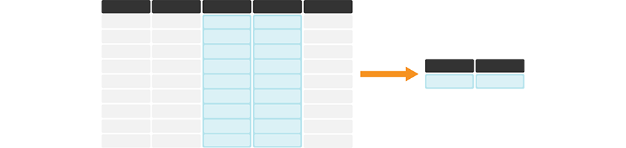
图 3.12 在 pandas 中对一列或多列计算汇总统计量，通常会生成一个 Series 或数据框，其中含有每个被汇总列的汇总统计量。每张表格颜色较深的最上面一行代表表头。#
我们先来看看如何计算把某种特定语言作为在家主要使用语言的加拿大人数的最小值和最大值。首先回顾一下 region_lang 的样子：
region_lang = pd.read_csv("data/region_lang.csv")
region_lang
| region | category | language | mother_tongue | most_at_home | most_at_work | lang_known | |
|---|---|---|---|---|---|---|---|
| 0 | St. John's | Aboriginal languages | Aboriginal languages, n.o.s. | 5 | 0 | 0 | 0 |
| 1 | Halifax | Aboriginal languages | Aboriginal languages, n.o.s. | 5 | 0 | 0 | 0 |
| 2 | Moncton | Aboriginal languages | Aboriginal languages, n.o.s. | 0 | 0 | 0 | 0 |
| 3 | Saint John | Aboriginal languages | Aboriginal languages, n.o.s. | 0 | 0 | 0 | 0 |
| 4 | Saguenay | Aboriginal languages | Aboriginal languages, n.o.s. | 5 | 5 | 0 | 0 |
| ... | ... | ... | ... | ... | ... | ... | ... |
| 7485 | Ottawa - Gatineau | Non-Official & Non-Aboriginal languages | Yoruba | 265 | 65 | 10 | 910 |
| 7486 | Kelowna | Non-Official & Non-Aboriginal languages | Yoruba | 5 | 0 | 0 | 0 |
| 7487 | Abbotsford - Mission | Non-Official & Non-Aboriginal languages | Yoruba | 20 | 0 | 0 | 50 |
| 7488 | Vancouver | Non-Official & Non-Aboriginal languages | Yoruba | 190 | 40 | 0 | 505 |
| 7489 | Victoria | Non-Official & Non-Aboriginal languages | Yoruba | 20 | 0 | 0 | 90 |
7490 rows × 7 columns
在所有地区中，我们用 .min 算出把某种特定语言作为在家主要使用语言的加拿大人数最少是多少，用 .max 算出最多是多少。
region_lang["most_at_home"].min()
0
region_lang["most_at_home"].max()
3836770
由此可以看到，数据集中有些语言没有任何人作为在家主要使用语言。我们还看到，使用人数最多的在家主要使用语言，有 3,836,770 人使用。如果你想知道的是这次调查中的总人数，也可以用 sum 这个汇总统计量方法。
region_lang["most_at_home"].sum()
23171710
其他常用的汇总统计量还有 mean、median 和 std，三者分别用来计算观测的均值、中位数和标准差。我们还可以用 agg 一次算出多个统计量，把结果“聚合”起来。例如，如果想一次同时算出 min 和 max，可以给 agg 传入参数 ["min", "max"]。请注意，agg 输出的是一个 Series 对象。
region_lang["most_at_home"].agg(["min", "max"])
min 0
max 3836770
Name: most_at_home, dtype: int64
pandas 包还提供了 describe 方法。这个函数很好用，能一次算出许多常用的汇总统计量，给出变量的汇总。
region_lang["most_at_home"].describe()
count 7.490000e+03
mean 3.093686e+03
std 6.401258e+04
min 0.000000e+00
25% 0.000000e+00
50% 0.000000e+00
75% 3.000000e+01
max 3.836770e+06
Name: most_at_home, dtype: float64
除了前面介绍的汇总方法，describe 方法还会输出 count（数据框中观测的总数，也就是行数），以及第 25、第 50 和第 75 百分位数。表 3.3 概览了一些有用的汇总统计量，它们都可以用 pandas 算出来。
函数 |
说明 |
|---|---|
|
观测（行）的个数 |
|
观测的均值 |
|
观测的中位数 |
|
观测的标准差 |
|
一列中的最大值 |
|
一列中的最小值 |
|
所有观测的求和 |
|
一次聚合多个统计量 |
|
汇总 |
备注
在 pandas 中，NaN 这个取值常用来表示缺失数据。默认情况下，pandas 计算汇总统计量（如 max、min、sum 等）时会忽略这些取值。如果你查看这些函数的文档，会看到一个输入变量 skipna，它默认被设为 skipna=True。也就是说，pandas 在计算统计量时会跳过 NaN 取值。
3.8.2. 在数据框上计算汇总统计量#
如果你想在整张数据框上计算汇总统计量，该怎么办？其实，表 3.3
里的函数可以直接用在整个数据框上！例如，我们可以用 max 求出每一列的最大值。
region_lang.max()
region Winnipeg
category Official languages
language Yoruba
mother_tongue 3061820
most_at_home 3836770
most_at_work 3218725
lang_known 5600480
dtype: object
可以看到，对于包含 "Vancouver"、"Halifax" 这类字符串数据的列，最大值是这样确定的：把字符串按字母顺序排序，然后返回最后一个。如果只想要数值列的最大值，可以传入 numeric_only=True：
region_lang.max(numeric_only=True)
mother_tongue 3061820
most_at_home 3836770
most_at_work 3218725
lang_known 5600480
dtype: int64
我们也可以求数据框中每一列的 mean。对字符串列求均值没有意义，所以这里必须提供关键字参数 numeric_only=True，让均值只在数值列上计算。
region_lang.mean(numeric_only=True)
mother_tongue 3200.341121
most_at_home 3093.686248
most_at_work 1853.757677
lang_known 5127.499332
dtype: float64
如果你只想对其中一部分列求汇总统计量，可以先用 [] 或 .loc[] 选出这些列，再像前面处理单列那样求汇总统计量。例如，要得到 "mother_tongue" 到 "lang_known"
之间所有列的均值和标准差，可以先用 .loc[] 选出这些列，再用 agg 同时求 mean 和 std。
region_lang.loc[:, "mother_tongue":"lang_known"].agg(["mean", "std"])
| mother_tongue | most_at_home | most_at_work | lang_known | |
|---|---|---|---|---|
| mean | 3200.341121 | 3093.686248 | 1853.757677 | 5127.499332 |
| std | 55231.640268 | 64012.578320 | 48574.532066 | 94001.162338 |
3.9. 使用 groupby 对分组后的行执行操作#
如果想了解语言在不同地区之间有什么差异，该怎么办？这时就需要一个新工具，用来按地区把行分组。用 pandas 中的 groupby 函数就能做到。把汇总函数与 groupby 搭配使用，就可以按数据集内部的子组汇总取值，如图 3.13 所示。例如，我们可以用 groupby 把 tidy_lang 数据框按地区分组，然后计算数据集中每个地区把这种语言作为在家主要使用语言的加拿大人数的最小值和最大值。
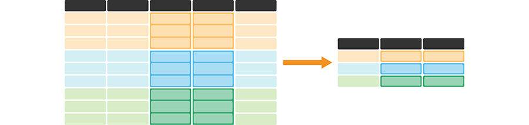
图 3.13 把汇总统计量函数与 groupby 搭配使用，便于对每一组的一列或多列计算该统计量。这样会生成一个新的数据框：每个组占一行，每个汇总统计量占一列。每张表格颜色较深的最上面一行代表表头。这个示意例子中的橙色、蓝色和绿色的行，分别对应三个组各自包含的行。#
groupby 函数至少要有一个参数——用于分组的列。这里我们只用一列来分组（region）。
region_lang.groupby("region")
<pandas.core.groupby.generic.DataFrameGroupBy object at 0x0000029C48CA4070>
请注意，groupby 会把 DataFrame 对象转换成 DataFrameGroupBy 对象，其中含有数据框各个组的信息。接下来，我们就可以对 DataFrameGroupBy 对象应用聚合函数。这里我们先选出
most_at_home 列，再用 agg 求出分组数据的最小值和最大值。
region_lang.groupby("region")["most_at_home"].agg(["min", "max"])
| min | max | |
|---|---|---|
| region | ||
| Abbotsford - Mission | 0 | 137445 |
| Barrie | 0 | 182390 |
| Belleville | 0 | 97840 |
| Brantford | 0 | 124560 |
| Calgary | 0 | 1065070 |
| ... | ... | ... |
| Trois-Rivières | 0 | 149835 |
| Vancouver | 0 | 1622735 |
| Victoria | 0 | 331375 |
| Windsor | 0 | 270715 |
| Winnipeg | 0 | 612595 |
35 rows × 2 columns
得到的数据框以 region 作为索引名。这与我们在第 3.4.2 节中使用 pivot
函数时的情况类似；和当时一样，你可以用 reset_index 把它恢复成普通数据框，region 则成为列名。
region_lang.groupby("region")["most_at_home"].agg(["min", "max"]).reset_index()
| region | min | max | |
|---|---|---|---|
| 0 | Abbotsford - Mission | 0 | 137445 |
| 1 | Barrie | 0 | 182390 |
| 2 | Belleville | 0 | 97840 |
| 3 | Brantford | 0 | 124560 |
| 4 | Calgary | 0 | 1065070 |
| ... | ... | ... | ... |
| 30 | Trois-Rivières | 0 | 149835 |
| 31 | Vancouver | 0 | 1622735 |
| 32 | Victoria | 0 | 331375 |
| 33 | Windsor | 0 | 270715 |
| 34 | Winnipeg | 0 | 612595 |
35 rows × 3 columns
你也可以把多个列名传给 groupby。例如，如果我们想了解不同类别的语言，即 Aboriginal（原住民）、Non-Official & Non-Aboriginal（非官方且非原住民）和
Official（官方），在不同地区家庭中的使用情况，就要给 groupby 传一个列表，其中包含 region 和 category。
region_lang.groupby(["region", "category"])["most_at_home"].agg(["min", "max"]).reset_index()
| region | category | min | max | |
|---|---|---|---|---|
| 0 | Abbotsford - Mission | Aboriginal languages | 0 | 5 |
| 1 | Abbotsford - Mission | Non-Official & Non-Aboriginal languages | 0 | 23015 |
| 2 | Abbotsford - Mission | Official languages | 250 | 137445 |
| 3 | Barrie | Aboriginal languages | 0 | 0 |
| 4 | Barrie | Non-Official & Non-Aboriginal languages | 0 | 875 |
| ... | ... | ... | ... | ... |
| 100 | Windsor | Non-Official & Non-Aboriginal languages | 0 | 8235 |
| 101 | Windsor | Official languages | 2695 | 270715 |
| 102 | Winnipeg | Aboriginal languages | 0 | 365 |
| 103 | Winnipeg | Non-Official & Non-Aboriginal languages | 0 | 23565 |
| 104 | Winnipeg | Official languages | 11185 | 612595 |
105 rows × 4 columns
你也可以在整张数据框上按组计算汇总统计量。
region_lang.groupby("region").agg(["min", "max"]).reset_index()
| region | category | language | mother_tongue | most_at_home | most_at_work | lang_known | |||||||
|---|---|---|---|---|---|---|---|---|---|---|---|---|---|
| min | max | min | max | min | max | min | max | min | max | min | max | ||
| 0 | Abbotsford - Mission | Aboriginal languages | Official languages | Aboriginal languages, n.o.s. | Yoruba | 0 | 122100 | 0 | 137445 | 0 | 93495 | 0 | 167835 |
| 1 | Barrie | Aboriginal languages | Official languages | Aboriginal languages, n.o.s. | Yoruba | 0 | 168990 | 0 | 182390 | 0 | 115125 | 0 | 193445 |
| 2 | Belleville | Aboriginal languages | Official languages | Aboriginal languages, n.o.s. | Yoruba | 0 | 93655 | 0 | 97840 | 0 | 54150 | 0 | 100855 |
| 3 | Brantford | Aboriginal languages | Official languages | Aboriginal languages, n.o.s. | Yoruba | 0 | 116645 | 0 | 124560 | 0 | 73910 | 0 | 130835 |
| 4 | Calgary | Aboriginal languages | Official languages | Aboriginal languages, n.o.s. | Yoruba | 0 | 937055 | 0 | 1065070 | 0 | 844740 | 0 | 1343335 |
| ... | ... | ... | ... | ... | ... | ... | ... | ... | ... | ... | ... | ... | ... |
| 30 | Trois-Rivières | Aboriginal languages | Official languages | Aboriginal languages, n.o.s. | Yoruba | 0 | 147805 | 0 | 149835 | 0 | 78610 | 0 | 149805 |
| 31 | Vancouver | Aboriginal languages | Official languages | Aboriginal languages, n.o.s. | Yoruba | 0 | 1316635 | 0 | 1622735 | 0 | 1330555 | 0 | 2289515 |
| 32 | Victoria | Aboriginal languages | Official languages | Aboriginal languages, n.o.s. | Yoruba | 0 | 302690 | 0 | 331375 | 0 | 211705 | 0 | 354470 |
| 33 | Windsor | Aboriginal languages | Official languages | Aboriginal languages, n.o.s. | Yoruba | 0 | 235990 | 0 | 270715 | 0 | 166220 | 0 | 318540 |
| 34 | Winnipeg | Aboriginal languages | Official languages | Aboriginal languages, n.o.s. | Yoruba | 0 | 530570 | 0 | 612595 | 0 | 437460 | 0 | 749285 |
35 rows × 13 columns
如果你只想要其中一部分列，比如 "most_at_home" 到 "lang_known" 之间的列，你可能会想先调用 groupby，再用 ["most_at_home":"lang_known"]；但 groupby
返回的是 DataFrameGroupBy 对象，它不支持在 [] 里使用范围。另一种做法是调换顺序：先用 ["most_at_home":"lang_known"]，再用 groupby。这样做能行得通，但必须小心！例如在我们这个例子里，就会报错。
region_lang["most_at_home":"lang_known"].groupby("region").max()
KeyError: "region"
这是因为用 [] 只选出了 "most_at_home" 到 "lang_known" 之间的列，其中并不包含 "region"！因此，正确的做法是先用 groupby，再用 [] 传入一个包含 region 的列名列表；这种写法总是行得通。（译注：原文对报错原因的解释并不准确。在 pandas 中，“df[“a”:”b”]”这种写法是按行标签切片，而不是选取列范围；本例的行索引是整数 RangeIndex，所以会直接抛出 TypeError，与选出的列是否包含 region 无关。要按列名选取一段范围，应使用 “.loc[:, “most_at_home”:”lang_known”]”。）
region_lang.groupby("region")[["most_at_home", "most_at_work", "lang_known"]].max().reset_index()
| region | most_at_home | most_at_work | lang_known | |
|---|---|---|---|---|
| 0 | Abbotsford - Mission | 137445 | 93495 | 167835 |
| 1 | Barrie | 182390 | 115125 | 193445 |
| 2 | Belleville | 97840 | 54150 | 100855 |
| 3 | Brantford | 124560 | 73910 | 130835 |
| 4 | Calgary | 1065070 | 844740 | 1343335 |
| ... | ... | ... | ... | ... |
| 30 | Trois-Rivières | 149835 | 78610 | 149805 |
| 31 | Vancouver | 1622735 | 1330555 | 2289515 |
| 32 | Victoria | 331375 | 211705 | 354470 |
| 33 | Windsor | 270715 | 166220 | 318540 |
| 34 | Winnipeg | 612595 | 437460 | 749285 |
35 rows × 4 columns
要想知道每个组里有多少个观测，可以用 value_counts。
region_lang.value_counts("region")
region
Abbotsford - Mission 214
St. Catharines - Niagara 214
Québec 214
Regina 214
Saguenay 214
...
Kitchener - Cambridge - Waterloo 214
Lethbridge 214
London 214
Moncton 214
Winnipeg 214
Name: count, Length: 35, dtype: int64
这个方法还可以接收 normalize 参数，把输出显示为比例而不是计数。
region_lang.value_counts("region", normalize=True)
region
Abbotsford - Mission 0.028571
St. Catharines - Niagara 0.028571
Québec 0.028571
Regina 0.028571
Saguenay 0.028571
...
Kitchener - Cambridge - Waterloo 0.028571
Lethbridge 0.028571
London 0.028571
Moncton 0.028571
Winnipeg 0.028571
Name: proportion, Length: 35, dtype: float64
3.10. 跨列应用函数#
计算汇总统计量并不是唯一需要跨列应用函数的情形。另外还有两类常见的数据整理任务也要跨列应用函数。第一类是：想把某种变换（如测量单位的换算）应用到多个列上。图 3.14 展示了这样一次数据变换；请注意，这种变换不会改变数据框的形状。
图 3.14 把一种变换应用到许多列上。每张表格颜色较深的最上面一行代表表头。#
例如，假设我们想用 .astype 函数把 region_lang 数据框中所有数值列从 int64 类型转换成 int32 类型。重新查看 region_lang 数据框，可以看到这些列就是从 mother_tongue
到 lang_known 的那些列。
region_lang
| region | category | language | mother_tongue | most_at_home | most_at_work | lang_known | |
|---|---|---|---|---|---|---|---|
| 0 | St. John's | Aboriginal languages | Aboriginal languages, n.o.s. | 5 | 0 | 0 | 0 |
| 1 | Halifax | Aboriginal languages | Aboriginal languages, n.o.s. | 5 | 0 | 0 | 0 |
| 2 | Moncton | Aboriginal languages | Aboriginal languages, n.o.s. | 0 | 0 | 0 | 0 |
| 3 | Saint John | Aboriginal languages | Aboriginal languages, n.o.s. | 0 | 0 | 0 | 0 |
| 4 | Saguenay | Aboriginal languages | Aboriginal languages, n.o.s. | 5 | 5 | 0 | 0 |
| ... | ... | ... | ... | ... | ... | ... | ... |
| 7485 | Ottawa - Gatineau | Non-Official & Non-Aboriginal languages | Yoruba | 265 | 65 | 10 | 910 |
| 7486 | Kelowna | Non-Official & Non-Aboriginal languages | Yoruba | 5 | 0 | 0 | 0 |
| 7487 | Abbotsford - Mission | Non-Official & Non-Aboriginal languages | Yoruba | 20 | 0 | 0 | 50 |
| 7488 | Vancouver | Non-Official & Non-Aboriginal languages | Yoruba | 190 | 40 | 0 | 505 |
| 7489 | Victoria | Non-Official & Non-Aboriginal languages | Yoruba | 20 | 0 | 0 | 90 |
7490 rows × 7 columns
我们只需调用 .astype 函数，就能把它应用到所需的列范围上。
region_lang_nums = region_lang.loc[:, "mother_tongue":"lang_known"].astype("int32")
region_lang_nums.info()
<class 'pandas.core.frame.DataFrame'>
RangeIndex: 7490 entries, 0 to 7489
Data columns (total 4 columns):
# Column Non-Null Count Dtype
--- ------ -------------- -----
0 mother_tongue 7490 non-null int32
1 most_at_home 7490 non-null int32
2 most_at_work 7490 non-null int32
3 lang_known 7490 non-null int32
dtypes: int32(4)
memory usage: 117.2 KB
现在可以看到，从 mother_tongue 到 lang_known 的列都是 int32 类型，而且得到的数据框与输入数据框具有相同的列数和行数。
第二类情形是：你想在每一行内部跨列应用函数，也就是按行（row-wise）计算。图 3.15 展示了这种操作，它生成单独的一列，其中的取值概括原始数据框中每一行的内容；这一新列还可以加回原始数据中。
图 3.15 在数据框中按行应用函数，生成一个新列。每张表格颜色较深的最上面一行代表表头。#
例如，假设我们想知道 region_lang_nums 数据集中每种语言、每个地区在 mother_tongue 和 lang_known 之间的最大值。换句话说，我们要按行应用 max 函数。要想让 max 知道我们想按行计算（而不是默认的逐列分别计算），只需指定参数 axis=1。
region_lang_nums.max(axis=1)
0 5
1 5
2 0
3 0
4 5
...
7485 910
7486 5
7487 50
7488 505
7489 90
Length: 7490, dtype: int32
可以看到，我们得到的是一个 Series，其中包含数据框每一行在 mother_tongue、most_at_home、most_at_work 和 lang_known 之间的最大值。我们常常希望把按行计算得到的结果作为新列加入数据框，以便作图或继续分析。为此，我们将使用列赋值或 assign 函数来新建一列。下一节会讨论这种做法。
备注
pandas 提供了许多可以应用到数据框上的方法（例如 max、astype 等），但有时你可能想把自己的函数应用到数据框的多个列上。这时你可以使用更通用的 apply 方法。
3.11. 修改和添加列#
计算汇总统计量或应用函数时，都会生成新的数据框或 Series。但如果我们想把这份信息追加到已有的数据框上呢？例如，假设我们要计算 region_lang_nums 数据框每一行的最大值，再把它作为 region_lang 数据框的一个新列追加进去。这时有两种选择：要么在 region_lang 数据框里新建一列，要么用 assign 方法新建一个数据框。第一种做法我们在前面几章已经见过，也是实践中更常用的模式：
region_lang["maximum"] = region_lang_nums.max(axis=1)
region_lang
| region | category | language | mother_tongue | most_at_home | most_at_work | lang_known | maximum | |
|---|---|---|---|---|---|---|---|---|
| 0 | St. John's | Aboriginal languages | Aboriginal languages, n.o.s. | 5 | 0 | 0 | 0 | 5 |
| 1 | Halifax | Aboriginal languages | Aboriginal languages, n.o.s. | 5 | 0 | 0 | 0 | 5 |
| 2 | Moncton | Aboriginal languages | Aboriginal languages, n.o.s. | 0 | 0 | 0 | 0 | 0 |
| 3 | Saint John | Aboriginal languages | Aboriginal languages, n.o.s. | 0 | 0 | 0 | 0 | 0 |
| 4 | Saguenay | Aboriginal languages | Aboriginal languages, n.o.s. | 5 | 5 | 0 | 0 | 5 |
| ... | ... | ... | ... | ... | ... | ... | ... | ... |
| 7485 | Ottawa - Gatineau | Non-Official & Non-Aboriginal languages | Yoruba | 265 | 65 | 10 | 910 | 910 |
| 7486 | Kelowna | Non-Official & Non-Aboriginal languages | Yoruba | 5 | 0 | 0 | 0 | 5 |
| 7487 | Abbotsford - Mission | Non-Official & Non-Aboriginal languages | Yoruba | 20 | 0 | 0 | 50 | 50 |
| 7488 | Vancouver | Non-Official & Non-Aboriginal languages | Yoruba | 190 | 40 | 0 | 505 | 505 |
| 7489 | Victoria | Non-Official & Non-Aboriginal languages | Yoruba | 20 | 0 | 0 | 90 | 90 |
7490 rows × 8 columns
从上面的输出可以看到，region_lang 数据框现在多了一列，列名为 maximum。maximum 列给出的是 mother_tongue、most_at_home、most_at_work 和 lang_known 之间的最大值，对应每种语言和每个地区，正是我们指定的结果！
如果要改成新建一个数据框，可以用 assign 方法，并为每个要创建的列指定一个参数。这里我们要新建一个名为 maximum 的列，所以传给 assign 的参数以 maximum= 开头。接着在 = 后面，我们给出这一列的内容。这里我们和前面一样用 max 求最大值。记得在 max 方法中指定 axis=1，这样算出来的才是按行的最大值。
region_lang.assign(
maximum=region_lang_nums.max(axis=1)
)
| region | category | language | mother_tongue | most_at_home | most_at_work | lang_known | maximum | |
|---|---|---|---|---|---|---|---|---|
| 0 | St. John's | Aboriginal languages | Aboriginal languages, n.o.s. | 5 | 0 | 0 | 0 | 5 |
| 1 | Halifax | Aboriginal languages | Aboriginal languages, n.o.s. | 5 | 0 | 0 | 0 | 5 |
| 2 | Moncton | Aboriginal languages | Aboriginal languages, n.o.s. | 0 | 0 | 0 | 0 | 0 |
| 3 | Saint John | Aboriginal languages | Aboriginal languages, n.o.s. | 0 | 0 | 0 | 0 | 0 |
| 4 | Saguenay | Aboriginal languages | Aboriginal languages, n.o.s. | 5 | 5 | 0 | 0 | 5 |
| ... | ... | ... | ... | ... | ... | ... | ... | ... |
| 7485 | Ottawa - Gatineau | Non-Official & Non-Aboriginal languages | Yoruba | 265 | 65 | 10 | 910 | 910 |
| 7486 | Kelowna | Non-Official & Non-Aboriginal languages | Yoruba | 5 | 0 | 0 | 0 | 5 |
| 7487 | Abbotsford - Mission | Non-Official & Non-Aboriginal languages | Yoruba | 20 | 0 | 0 | 50 | 50 |
| 7488 | Vancouver | Non-Official & Non-Aboriginal languages | Yoruba | 190 | 40 | 0 | 505 | 505 |
| 7489 | Victoria | Non-Official & Non-Aboriginal languages | Yoruba | 20 | 0 | 0 | 90 | 90 |
7490 rows × 8 columns
这个数据框看起来和上一个完全一样，区别在于它是 region_lang 的副本，而不是 region_lang 本身；继续修改这个数据框不会影响原来的 region_lang 数据框。
再举一个例子。我们可能会问：“2016 年人口普查中，报告把英语作为在家主要使用语言的人占多大比例？”例如在 Toronto，有 3,836,770 人报告自己把英语作为在家主要使用的语言，而 Toronto 的人口为 5,928,040 人。所以，2016 年人口普查中 Toronto 报告把英语作为在家主要使用语言的人口比例为 0.65。那么，从 region_lang 数据框出发，我们该怎么算出这个结果呢？
首先，我们需要筛选 region_lang 数据框，只保留语言为英语的行。我们还要把范围限定在 five_cities 数据框中的五个主要城市：Toronto、Montréal、Vancouver、Calgary 和 Edmonton。筛选时只保留与英语有关、并且属于上述五个城市的行。要把这两个逻辑表达式组合起来，我们用 & 符号。再用 [] 操作，以 "English" 作为 language 筛选行，并把新数据框命名为 english_langs。
english_lang = region_lang[
(region_lang["language"] == "English") &
(region_lang["region"].isin(five_cities["region"]))
]
english_lang
| region | category | language | mother_tongue | most_at_home | most_at_work | lang_known | |
|---|---|---|---|---|---|---|---|
| 1898 | Montréal | Official languages | English | 444955 | 620510 | 412120 | 2500590 |
| 1903 | Toronto | Official languages | English | 3061820 | 3836770 | 3218725 | 5600480 |
| 1918 | Calgary | Official languages | English | 937055 | 1065070 | 844740 | 1343335 |
| 1919 | Edmonton | Official languages | English | 930405 | 1050410 | 792700 | 1275265 |
| 1923 | Vancouver | Official languages | English | 1316635 | 1622735 | 1330555 | 2289515 |
好，现在这个数据框只涉及英语和前面提到的五个城市。要算出这些城市中讲英语的人口比例，我们需要把 five_cities 数据框中的人口数据加进来。
five_cities
| region | households | area | population | dwellings | |
|---|---|---|---|---|---|
| 29 | Edmonton | 502143 | 9857.77908 | 1321426 | 537634 |
| 31 | Calgary | 519693 | 5241.70103 | 1392609 | 544870 |
| 32 | Vancouver | 960894 | 3040.41532 | 2463431 | 1027613 |
| 33 | Montréal | 1727310 | 4638.24059 | 4098927 | 1823281 |
| 34 | Toronto | 2135909 | 6269.93132 | 5928040 | 2235145 |
上面的数据框显示，2016 年这五个城市的人口分别是
5928040（Toronto）、4098927（Montréal）、2463431（Vancouver）、1392609（Calgary）和 1321426（Edmonton）。接下来，我们把这份信息加到数据框的一个新列 city_pops 中。这里我们同样用 assign 方法和常规列赋值各演示一遍做法。我们把新列名（city_pops）作为参数，后面跟等号 =，最后是该列的数据。注意，english_lang 数据框中各行的顺序是 Montréal、Toronto、Calgary、Edmonton、Vancouver。所以我们要新建一个名为 city_pops 的列，按这个顺序列出这些城市的人口，再把它加到数据框中。还要记住，和其他 pandas 函数一样，assign 默认不会直接修改原数据框，所以 english_lang 数据框不会改变！
english_lang.assign(
city_pops=[4098927, 5928040, 1392609, 1321426, 2463431]
)
| region | category | language | mother_tongue | most_at_home | most_at_work | lang_known | city_pops | |
|---|---|---|---|---|---|---|---|---|
| 1898 | Montréal | Official languages | English | 444955 | 620510 | 412120 | 2500590 | 4098927 |
| 1903 | Toronto | Official languages | English | 3061820 | 3836770 | 3218725 | 5600480 | 5928040 |
| 1918 | Calgary | Official languages | English | 937055 | 1065070 | 844740 | 1343335 | 1392609 |
| 1919 | Edmonton | Official languages | English | 930405 | 1050410 | 792700 | 1275265 | 1321426 |
| 1923 | Vancouver | Official languages | English | 1316635 | 1622735 | 1330555 | 2289515 | 2463431 |
除了用 assign 方法，我们也可以直接用常规列赋值修改 english_lang 数据框。在这个例子里这样做更自然，因为对于简单的列修改和添加，这种语法更方便。
english_lang["city_pops"] = [4098927, 5928040, 1392609, 1321426, 2463431]
english_lang
/tmp/ipykernel_12/2654974267.py:1: SettingWithCopyWarning:
A value is trying to be set on a copy of a slice from a DataFrame.
Try using .loc[row_indexer,col_indexer] = value instead
See the caveats in the documentation: https://pandas.pydata.org/pandas-docs/stable/user_guide/indexing.html#returning-a-view-versus-a-copy
english_lang["city_pops"] = [4098927, 5928040, 1392609, 1321426, 2463431]
| region | category | language | mother_tongue | most_at_home | most_at_work | lang_known | city_pops | |
|---|---|---|---|---|---|---|---|---|
| 1898 | Montréal | Official languages | English | 444955 | 620510 | 412120 | 2500590 | 4098927 |
| 1903 | Toronto | Official languages | English | 3061820 | 3836770 | 3218725 | 5600480 | 5928040 |
| 1918 | Calgary | Official languages | English | 937055 | 1065070 | 844740 | 1343335 | 1392609 |
| 1919 | Edmonton | Official languages | English | 930405 | 1050410 | 792700 | 1275265 | 1321426 |
| 1923 | Vancouver | Official languages | English | 1316635 | 1622735 | 1330555 | 2289515 | 2463431 |
等一下……那条警告信息是怎么回事？它似乎在说哪里出了问题，但看看上面的
english_lang 数据框，城市人口明明加得好好的！原来，这是前面把 region_lang
筛选成最初的 english_lang 时留下的影响。细节有点技术性：先用 [] 或 loc[]
取数据框的子集，紧接着做列赋值，pandas 有时不喜欢这种写法。就你自己的数据分析而言，如果看到 SettingWithCopyWarning，只要在继续之前再核对一遍列赋值的结果是否符合预期就行。为了方便阅读，本书其余部分会关掉这条警告。
备注
像上面那样手动插入数据列 [4098927, 5928040, ...] 通常很容易出错，并不推荐这样做。这里这样做，只是为了演示 assign 和常规列赋值的另一种用法。但在更高级的数据整理中，人们会用 merge 函数以更不容易出错的方式解决这个问题，它可以把两个数据框合并起来。我们会在本章末尾演示一个使用 merge 的例子！
现在，数据框里多了一个新列，存放各城市的人口。最后，把所有数值列与 city_pops 相除，就能把它们都换算成讲英语人口的比例。我们直接修改 english_lang 的列；这里直接给数据框赋值即可。这类似于我们在第 3.4.3 节中的做法：当时我们刚读入 "region_lang_top5_cities_messy.csv" 数据，需要把几个变量转成数值类型。这里我们用 loc[] 同时给一个列范围赋值。注意，修改已有的列时同样可以用 assign 函数生成一个新的数据框，只是实际中很少这样做。还要注意，我们用 div 方法并指定参数 axis=0，把一个列范围内的各列除以单个列的取值——这种情况下基本除号 / 不起作用。
english_lang.loc[:, "mother_tongue":"lang_known"] = english_lang.loc[
:,
"mother_tongue":"lang_known"
].div(english_lang["city_pops"], axis=0)
english_lang
| region | category | language | mother_tongue | most_at_home | most_at_work | lang_known | city_pops | |
|---|---|---|---|---|---|---|---|---|
| 1898 | Montréal | Official languages | English | 0.108554 | 0.151384 | 0.100543 | 0.610060 | 4098927 |
| 1903 | Toronto | Official languages | English | 0.516498 | 0.647224 | 0.542966 | 0.944744 | 5928040 |
| 1918 | Calgary | Official languages | English | 0.672877 | 0.764802 | 0.606588 | 0.964617 | 1392609 |
| 1919 | Edmonton | Official languages | English | 0.704092 | 0.794906 | 0.599882 | 0.965067 | 1321426 |
| 1923 | Vancouver | Official languages | English | 0.534472 | 0.658730 | 0.540123 | 0.929401 | 2463431 |
3.12. 用 merge 合并数据框#
我们回到给 english_lang 数据框加入 Toronto、Montréal、Vancouver、Calgary 和 Edmonton 这几座城市人口之前的状态。在添加新列之前，我们已经从 region_lang 中筛选出了
english_lang 数据框，其中只包含这五个目标城市里讲英语的人。
english_lang
| region | category | language | mother_tongue | most_at_home | most_at_work | lang_known | |
|---|---|---|---|---|---|---|---|
| 1898 | Montréal | Official languages | English | 444955 | 620510 | 412120 | 2500590 |
| 1903 | Toronto | Official languages | English | 3061820 | 3836770 | 3218725 | 5600480 |
| 1918 | Calgary | Official languages | English | 937055 | 1065070 | 844740 | 1343335 |
| 1919 | Edmonton | Official languages | English | 930405 | 1050410 | 792700 | 1275265 |
| 1923 | Vancouver | Official languages | English | 1316635 | 1622735 | 1330555 | 2289515 |
随后我们把这些城市的人口加成一列（Toronto：5928040，Montréal：4098927，Vancouver：2463431，Calgary：1392609，Edmonton：1321426）。添加时必须注意顺序正确，这个过程很容易出错。这里演示的另一种做法是：（1）先新建一个数据框，其中包含城市名称和人口，（2）注意到两者的“regions”是相同的，用 merge 把这两个数据框合并起来。
我们调用 pd.DataFrame，并以一个字典作为参数来新建数据框。字典把待建数据框的每个列名与一个条目列表对应起来。这里我们在 "region" 列中列出城市名称，在 "population" 列中列出它们的人口。
city_populations = pd.DataFrame({
"region" : ["Toronto", "Montréal", "Vancouver", "Calgary", "Edmonton"],
"population" : [5928040, 4098927, 2463431, 1392609, 1321426]
})
city_populations
| region | population | |
|---|---|---|
| 0 | Toronto | 5928040 |
| 1 | Montréal | 4098927 |
| 2 | Vancouver | 2463431 |
| 3 | Calgary | 1392609 |
| 4 | Edmonton | 1321426 |
这个新数据框的 region 列与 english_lang 数据框相同。城市的顺序不同，但这没关系！我们可以用 pandas 中的 merge 函数，按 region 把两个数据框匹配着合并起来。参数
on="region" 告诉 pandas，我们想用 region 列来匹配条目。
english_lang = english_lang.merge(city_populations, on="region")
english_lang
| region | category | language | mother_tongue | most_at_home | most_at_work | lang_known | population | |
|---|---|---|---|---|---|---|---|---|
| 0 | Montréal | Official languages | English | 444955 | 620510 | 412120 | 2500590 | 4098927 |
| 1 | Toronto | Official languages | English | 3061820 | 3836770 | 3218725 | 5600480 | 5928040 |
| 2 | Calgary | Official languages | English | 937055 | 1065070 | 844740 | 1343335 | 1392609 |
| 3 | Edmonton | Official languages | English | 930405 | 1050410 | 792700 | 1275265 | 1321426 |
| 4 | Vancouver | Official languages | English | 1316635 | 1622735 | 1330555 | 2289515 | 2463431 |
可以看到，每个城市的人口都是正确的（例如 Montréal：4098927，Toronto：5928040），从这里就可以接着做我们的分析了。
3.13. 小结#
清洗和整理数据可能非常耗时。不过，这是任何数据分析中至关重要的一步。我们探索了许多把数据清洗、整理成整洁格式的函数。表 3.4 汇总了本章学到的一些关键整理函数。后续各章会讲到，你可以拿这份整洁数据做更多的事情，去回答那些让你迫切想找到答案的数据科学问题！
函数 |
说明 |
|---|---|
|
计算输入的聚合汇总 |
|
在数据框中添加或修改列 |
|
可以对若干行组成的分组应用函数 |
|
用整数索引取数据框的列/行子集 |
|
用标签取数据框的列/行子集 |
|
一般使数据框变长、变窄 |
|
合并两个数据框 |
|
一般使数据框变宽、行数减少 |
|
把字符串列拆分成多列 |
3.14. 习题#
本章内容的练习题可以在配套的练习册仓库的“Cleaning and wrangling data（数据清洗与整理）”一行中找到。你可以预览本章练习册（worksheet）的非交互版本，只需点击“查看练习册（view worksheet）”。如果要交互式地做习题，请按照练习册仓库中的说明下载所有练习册，并按照第 13 章中的计算机环境配置说明操作。这样才能保证练习册提供的自动反馈和指导按预期正常工作。
3.15. 拓展资源#
pandas包文档是另一份资源，可以进一步了解本章的函数、可以使用的全部参数，以及其他相关函数。《Python for Data Analysis》 [McKinney, 2012] 有几章与数据整理有关，比本书讲得更深入。例如，数据整理一章介绍了整洁数据、
melt和pivot，也介绍了缺失值和更多整理函数（如stack）。数据聚合一章介绍了groupby、聚合函数、apply等。偶尔你会遇到需要遍历数据框中各个条目的情形，而上面这些函数都不够灵活，做不到你想要的效果。这时可以考虑使用 for 循环 [McKinney, 2012]。